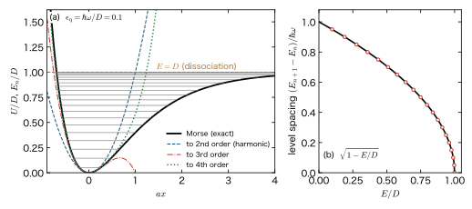
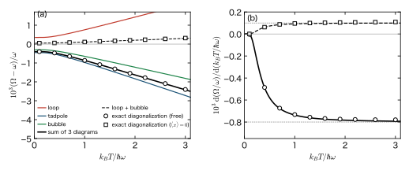
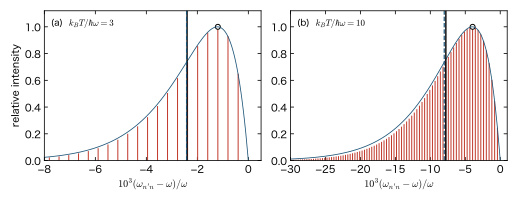

Chapter 14Phonon–Phonon Interactions — Anharmonicity and the Self-Energy
From Chapters 2 and 3 through Chapters 7 and 13, this book has returned to the harmonic oscillator again and again. In Example 13.1 of Chapter 13, we saw that the temperature disappears completely from the response function $\chi_{xx}$ of the harmonic oscillator. Because the levels are equally spaced, the oscillator answers at the same frequency no matter which level it is kicked from. That is why raising the temperature neither moves the position of the resonance nor produces a width.
Real solids, however, are not like this. They expand when heated, the phonon frequencies seen in Raman scattering and neutron scattering shift with temperature, and the peaks have widths. All of these are consequences of the interatomic potential deviating from a quadratic form, that is, of anharmonicity. When anharmonic terms are present, phonons exchange energy with one another. This is called the phonon–phonon interaction.
The standpoint of this chapter is clear. We take the tools that Part IV and Chapter 13 built for the Coulomb interaction between electrons—the Matsubara Green's function, Wick's theorem, Feynman diagrams, the Dyson equation, and the self-energy—and use them as they are for the phonon–phonon interaction. Since no exact solution is available for the electron gas, it was hard to check whether a diagrammatic calculation was correct. The anharmonic oscillator, by contrast, can be diagonalized exactly if it has one degree of freedom. In this chapter, we proceed by checking the answer of every diagram against naive perturbation theory, the exact levels, and exact diagonalization. There are not many places where one can verify “what Feynman diagrams are computing” in such a tangible form.
- Why the harmonic approximation gives none of thermal expansion, the temperature dependence of the frequency, and the linewidth
- The anharmonic oscillator $U(x)=\frac12m\omega^2x^2-\xi x^3+\varphi x^4$ and the Morse potential. The exact Morse levels and dissociation
- First- and second-order perturbation theory with creation and annihilation operators. That the transition frequency shifts in proportion to $n+1$, and that thermal averaging produces $2n_B+1$
- The relation between the displacement response function (Chapters 3 and 7) and the phonon Green's function (Chapter 13). The correspondence $\Gamma=-\Sigma''=\gamma/2m$ between the self-energy $\Sigma$ and the damping constant $\gamma$ of Chapter 3
- Counting contractions with Wick's theorem ($5!!=15$, $7!!=105$, $9!!=945$), and how to read phonon Feynman diagrams
- Deriving the three self-energies—loop, tadpole, and bubble—without skipping the Matsubara sums or the analytic continuation
- The condition $\varphi\gtrless\frac52\xi^2/m\omega^2$ that determines the sign of the temperature dependence of the frequency. For Morse, loop $+\frac74$, tadpole $-\frac94$, bubble $-\frac32$ (in units of $k_BT/D$)
- The physical meaning of the three diagrams: the loop is the average curvature, the tadpole is thermal expansion, and the bubble is level repulsion with the overtone
- Key points for reading the diagrams: why phonon lines have no arrows, that in the tadpole the phonon does not change into a different wave vector, and that the lifetime comes only from processes that “do not come back”
- Second order in the quartic term (the double loop and the sunset), the relation to the self-consistent phonon (SCPH) method, and cancellations between diagrams of the same order
- Reading the diagrams of fourth order in the cubic term (the six kinds, out of $13!!=135135$ contractions, that enter the self-energy) as the dressing of the parts (lines and vertices) of the second-order diagrams. The vertex correction
- Linewidth: a multiplet for a single oscillator; in a crystal, the bubble ($\propto T$) and the sunset ($\propto T^2$)
- Generalization to crystals and the quasiharmonic approximation (QHA). That the QHA picks up only the tadpole that goes through the strain
- A dictionary between electron systems (Fetter–Walecka) and phonon systems
14.1 Motivation — What the Harmonic Approximation Cannot Give
14.1.1 Three things missing from the harmonic approximation
Atoms in a solid vibrate about their equilibrium positions. Taylor-expanding the interatomic potential about the equilibrium positions and stopping at the second-order term gives the harmonic approximation. Within the harmonic approximation, a solid becomes a collection of independent harmonic oscillators (normal modes, phonons). This is the starting point of the theory of lattice vibrations; both the Debye model of the specific heat and the phonon dispersion measured by neutron scattering (Chapter 12) rest on this approximation.
The harmonic approximation, however, has three clear omissions.
Three things the harmonic approximation cannot give
- No thermal expansion. If the potential is $\frac12m\omega^2x^2$, it is symmetric under $x\to-x$, so the average position is $\braket{x}=0$ at any temperature. Heating does not change the interatomic distance.
- The frequency does not change with temperature. As shown in Example 13.1 of Chapter 13, the temperature does not enter the Matsubara function of the harmonic oscillator, $\mathcal{G}_{xx}(\ii\omega_n)=\hbar/m[(\ii\omega_n)^2-\omega^2]$ (the $\omega_0$ of Chapter 13 is written $\omega$ in this chapter). Because the levels are equally spaced, the transition $n\to n+1$ has the same frequency $\omega$ for every $n$.
- No linewidth. The spectrum of the harmonic oscillator is a delta function at $\omega=\pm\omega_0$ and has no width. The oscillation never decays (Chapter 7, Section 7.7).
Experiment contradicts all three. Solids (in most cases) expand when heated, the phonon frequencies seen in Raman scattering and neutron scattering move with temperature, and the peaks have finite widths. The thermal conductivity is finite, too, because phonons scatter off one another and have finite lifetimes.
All three omissions come from the same cause: the deviation of the potential from a quadratic form, that is, the terms of third and higher order. In the language of phonons, these terms represent processes such as “one phonon splits into two,” “two merge into one,” and “two scatter into two.” In other words, they are interactions among phonons.
14.1.2 The standpoint of this chapter — replacing the electron–electron interaction with the phonon–phonon interaction
Why the tools of Part IV can be used as they are
In Part IV, we treated the Coulomb interaction in the electron gas. In Appendix C, we organized it with Feynman diagrams and saw that the real part of the self-energy $\Sigma$ gives the energy shift (renormalization) and the imaginary part gives the lifetime. In Chapter 13, we built the Matsubara formalism for doing the same thing at finite temperature.
What we do for the phonon–phonon interaction is exactly the same.
- Free system: the electron gas $\to$ a collection of harmonic oscillators
- Interaction: the Coulomb interaction $v(q)$ $\to$ the cubic and quartic anharmonic terms
- What we want to know: the quasiparticle energy and lifetime of electrons $\to$ the renormalized frequency $\Omega$ and the linewidth $\Gamma$ of phonons
There are only two differences. Phonons are bosons, so the Matsubara frequencies are bosonic (Table 13.1 of Chapter 13); and the number of phonons is not conserved, so vertices with an odd number of legs (the cubic term) appear. The latter produces a new diagram (the tadpole) that did not exist in the electron gas, and it turns out to be thermal expansion itself (Section 14.8).
Another advantage of this chapter is that we can check our answers. Since the self-energy of the electron gas cannot be computed exactly, there is almost no way to check independently whether a second-order diagram is correct. For an anharmonic oscillator with one degree of freedom, however, we can check the answer of a diagram by four independent methods: (i) quantum-mechanical perturbation theory (Section 14.3), (ii) the exact levels of the Morse potential (Section 14.2), (iii) the amplitude-dependent frequency of classical mechanics, and (iv) numerical exact diagonalization (Section 14.7). Below, every time a diagram yields an answer, we compare it with these.
14.1.3 The plan of this chapter
First, in Section 14.2 we define the model, and in Section 14.3 we obtain the answer of naive perturbation theory. This will serve as the “correct answer.” In Section 14.4 we define the response function and the phonon Green's function in the conventions of this book and establish the relation between the self-energy $\Sigma$ and the $\gamma$ of Chapter 3. Sections 14.5 and 14.6 are the core of this chapter: we count contractions with Wick's theorem and compute the three lowest-order diagrams, including the Matsubara sums and the analytic continuation. In Sections 14.7 and 14.8 we read off the results, and in Sections 14.9 and 14.10 we proceed to the next order and to the linewidth. In Section 14.11 we generalize to crystals and build a bridge to Chapter 15 (methods for computing phonons at finite temperature). Finally, in Section 14.12, we summarize the correspondence with electron systems in a table.
14.2 The Model — The Anharmonic Oscillator and the Morse Potential
14.2.1 The anharmonic oscillator with one degree of freedom
Suppose a particle of mass $m$ moves in one dimension in the following potential.
$\omega$ is the harmonic frequency (the frequency when the anharmonic terms are dropped at $T=0$), and $\xi$ and $\varphi$ are the cubic and quartic coefficients, respectively. When $\xi>0$, $-\xi x^3$ lowers the potential on the $x>0$ side, so the $x>0$ side is softer. For a bond between atoms, the side on which the bond stretches is usually the softer one, and if we read $x$ as “the elongation of the bond length,” $\xi>0$ is the typical case. If $\varphi>0$, the walls on both sides become steeper.
We write $\Omega$ for the frequency renormalized by the anharmonic terms at temperature $T$. The goal of this chapter is to obtain $\Omega$ and its temperature dependence, as well as the linewidth.
As in Chapter 7 and Section C.9, we write in terms of creation and annihilation operators:
$\ell$ is a measure of the amplitude of the zero-point vibration (in the ground state, $\braket{\hat x^2}=\ell^2$). In Section C.9 it was written $x_0$, but in this chapter we want to use $x_0$ for the average position, so we write $\ell$. We split the Hamiltonian as
$$ \begin{equation} \Ham = \Ham_0 + \hat U_3 + \hat U_4, \qquad \Ham_0 = \hbar\omega\left(\hat a^\dagger\hat a + \frac12\right), \qquad \hat U_3 = -\xi\ell^3\hat A^3, \qquad \hat U_4 = \varphi\ell^4\hat A^4 \label{eq:14-H0U3U4} \end{equation} $$It is convenient to measure the strength of the anharmonicity with the following dimensionless quantities.
$$ \begin{equation} g_3 \equiv \frac{\xi\ell^3}{\hbar\omega}, \qquad g_4 \equiv \frac{\varphi\ell^4}{\hbar\omega} \label{eq:14-g3g4} \end{equation} $$$g_3$ is “the energy of the cubic term at a displacement equal to the zero-point amplitude $\ell$” measured in units of the quantum $\hbar\omega$, and likewise for $g_4$. Perturbation theory assumes $g_3,g_4\ll1$.
Notes on notation
- Bose distribution. As in Chapter 13, we write $n_B$. Unless stated otherwise, $n_B\equiv n_B(\hbar\omega)=(\ee^{\beta\hbar\omega}-1)^{-1}$ and $\beta=1/k_BT$. When it is used in a Matsubara sum as a function of the complex frequency $z$, we write $n_B(z)=(\ee^{\beta\hbar z}-1)^{-1}$ ($z$ is a frequency), as in Section 13.7.
- Matsubara frequencies. We use the bosonic $\omega_n=2n\pi/\beta\hbar$ (Definition 13.3 of Chapter 13). The index $n$ of $\omega_n$ has nothing to do with the level number $n$ of Section 14.3. $\omega_n$ and the harmonic frequency $\omega$ are also different things. Where confusion could arise, we write, for example, “the $n=0$ Matsubara frequency $\omega_n=0$.”
- Imaginary time. $\tau$ is imaginary time, as in Chapter 13. We do not use $\tau$ for lifetimes.
- Frequency variable. We write the argument of response functions as a complex frequency $z$, and on the real axis we read it as $z\to z+\ii0^+$. This is because $\omega$ is reserved for the harmonic frequency.
14.2.2 A concrete example: the Morse potential
To get a feel for the size of the coefficients $\xi,\varphi$, consider the Morse potential, which is often used as a model of the bond in a diatomic molecule.
$$ \begin{equation} U_{\rm M}(x) = D\left(1-\ee^{-ax}\right)^2 \label{eq:14-morse} \end{equation} $$$D$ is the depth of the well (the dissociation energy), and $a$ is the inverse of the width of the well (to distinguish the Morse width parameter $a$ from the annihilation operator $\hat a$, we put a hat on the operator). As $x\to\infty$, $U_{\rm M}\to D$, and the bond breaks.
Derivation: Expanding the Morse potential to fourth order
Step 1: Expanding the exponential. Setting $y\equiv ax$,
$$ \ee^{-y} = 1 - y + \frac{y^2}{2} - \frac{y^3}{6} + \frac{y^4}{24} - \cdots, \qquad 1-\ee^{-y} = y - \frac{y^2}{2} + \frac{y^3}{6} - \frac{y^4}{24} + \cdots $$Step 2: Squaring and collecting order by order. We pick out the coefficient of each order in $(1-\ee^{-y})^2$.
- $y^2$: only $y\cdot y$, giving $1$.
- $y^3$: $y\cdot(-\frac{y^2}{2})$ twice (the two orderings), giving $-1$.
- $y^4$: $(-\frac{y^2}{2})^2=\frac14$, and $y\cdot\frac{y^3}{6}$ twice, giving $\frac13$. In total, $\frac14+\frac13=\frac{7}{12}$.
Step 3: Comparing the coefficients with Eq. \eqref{eq:14-H}.
$$ \frac12m\omega^2 = Da^2, \qquad \xi = Da^3, \qquad \varphi = \frac{7}{12}Da^4 $$Step 4: Writing $a$, $D$, and $\varphi$ in terms of $m,\omega,\xi$. Dividing the second equation by the first gives $\xi/(\frac12m\omega^2)=a$. Substituting this back into the first gives $D=m\omega^2/2a^2$. The third equation becomes $\varphi=\frac{7}{12}\cdot\frac{(Da^3)^2}{Da^2}=\frac{7}{12}\cdot\frac{\xi^2}{Da^2}=\frac{7}{12}\cdot\frac{\xi^2}{m\omega^2/2}$. Altogether,
∎ For Morse, $\varphi$ is fixed by $\xi$. Morse is a one-parameter anharmonic oscillator in which “the ratio of the cubic and quartic terms is fixed at $\varphi/(\xi^2/m\omega^2)=7/6$.”
The appeal of the Morse potential is that its Schrödinger equation can be solved exactly (Morse 1929). The exact levels are
They are lowered from the levels of the harmonic oscillator by an amount proportional to the square of $(n+\frac12)$. Let us define two dimensionless quantities that will be used below.
$$ \begin{equation} \epsilon_{\rm q} \equiv \frac{\hbar\omega}{D}\quad(\text{quantum scale}), \qquad \epsilon_T \equiv \frac{k_BT}{D}\quad(\text{thermal scale}) \label{eq:14-eps} \end{equation} $$$\epsilon_{\rm q}$ is “what fraction of the well depth one quantum is,” and $\epsilon_T$ is “what fraction of the well depth the thermal energy is.” From Eqs. \eqref{eq:14-morse-coef} and \eqref{eq:14-g3g4}, $g_3^2=\xi^2\ell^6/(\hbar\omega)^2=\hbar\xi^2/8m^3\omega^5$ and $\epsilon_{\rm q}=8\hbar\xi^2/m^3\omega^5$, so
$$ \begin{equation} \epsilon_{\rm q} = 64\,g_3^2, \qquad g_4 = \frac73\,g_3^2\qquad(\text{Morse}) \label{eq:14-morse-g} \end{equation} $$(for the second equation, multiply $\varphi=\frac76\xi^2/m\omega^2$ by $\ell^4/\hbar\omega$ and compare with $g_3^2$).
Derivation: The number of bound levels, and the energy at which the level spacing vanishes
Step 1: The level spacing. Take the difference of Eq. \eqref{eq:14-morse-levels}. Writing $u\equiv n+\frac12$, we have $E(u)=\hbar\omega u-(\hbar\omega u)^2/4D$, and
$$ E_{n+1}-E_n = \hbar\omega - \frac{(\hbar\omega)^2}{4D}\left[(u+1)^2-u^2\right] = \hbar\omega - \frac{(\hbar\omega)^2}{4D}(2u+1) = \hbar\omega\left[1-\frac{\epsilon_{\rm q}}{2}(n+1)\right] $$The level spacing shrinks at a constant rate as $n$ increases.
Step 2: Writing it as a function of $E$. $E(u)$ is a quadratic function of $u$ (a downward-opening parabola), and its vertex is at $\dd E/\dd u=\hbar\omega-2(\hbar\omega)^2u/4D=0$, that is, at $\hbar\omega u=2D$. The value at the vertex is $E=2D-(2D)^2/4D=D$, exactly the dissociation energy. Also, completing the square gives $E=D[1-(1-\hbar\omega u/2D)^2]$, so $1-\hbar\omega u/2D=\sqrt{1-E/D}$, and therefore the local level spacing is
$$ \frac{\dd E}{\dd u} = \hbar\omega\left(1-\frac{\hbar\omega u}{2D}\right) = \hbar\omega\sqrt{1-\frac{E}{D}} $$The level spacing vanishes at $E=D$.
Step 3: The number of bound levels. The parabola \eqref{eq:14-morse-levels} is meaningful only up to its vertex, that is, only for the levels with
$$ n+\frac12 < \frac{2D}{\hbar\omega} = \frac{2}{\epsilon_{\rm q}} $$Above that are dissociated (unbound) states. ∎

Sidebar: Putting in numbers for real molecules
Let us see how large the quantities written in the language of Morse are for real molecules. From the spectroscopic constants of diatomic molecules (the harmonic frequency $\omega_e$, the rotational constant $B_e$, the vibration–rotation coupling constant $\alpha_e$, and the equilibrium internuclear distance $r_e$, as compiled in the NIST Chemistry WebBook), $k=m\omega^2$ and $\xi$ are obtained by the following procedure ($m$ is the reduced mass $\mu$).
- Force constant: $k=\mu\omega_e^2$ ($\omega_e$ converted to an angular frequency).
- Dunham (1932) expanded the potential in $\rho=(r-r_e)/r_e$ as $U=a_0\rho^2(1+a_1\rho+\cdots)$ and showed that $a_1=-1-\alpha_e\omega_e/6B_e^2$ ($\omega_e$ and $B_e$ in the same energy units).
- Since $a_0\rho^2=\frac{k}{2}(r-r_e)^2$, the cubic term is $\frac{k}{2}(r-r_e)^2\cdot a_1\frac{r-r_e}{r_e}$. Comparing this with $-\xi(r-r_e)^3$ gives $\xi=-ka_1/2r_e$.
- The Morse well depth determined from $k$ and $\xi$ alone: from Eq. \eqref{eq:14-morse-coef}, $D_{\rm M}=m^3\omega^6/8\xi^2=k^3/8\xi^2$.
| Molecule | $k$ [N/m] | $\xi$ [J/m$^3$] | $\nu$ [THz] | $D_{\rm M}$ [eV] | Actual $D_e$ [eV] | $2D_{\rm M}/\hbar\omega$ | Actual number of bound levels |
|---|---|---|---|---|---|---|---|
| H$_2$ | 575.1 | $6.23\times10^{12}$ | 131.9 | 3.82 | 4.75 | 14.0 | 15 |
| D$_2$ | 575.9 | $6.23\times10^{12}$ | 93.4 | 3.84 | 4.75 | 19.9 | 22 |
| Li$_2$ | 25.5 | $9.13\times10^{10}$ | 10.5 | 1.56 | 1.07 | 71.5 | (unverified) |
| N$_2$ | 2295 | $2.83\times10^{13}$ | 70.7 | 11.8 | 9.91 | 80.7 | (unverified) |
| O$_2$ | 1177 | $1.47\times10^{13}$ | 47.4 | 5.92 | 5.21 | 60.4 | (unverified) |
| F$_2$ | 470 | $6.11\times10^{12}$ | 27.5 | 2.17 | 1.66 | 38.2 | (unverified) |
Note: $D_e$ for Li$_2$ through F$_2$ is the tabulated $D_0$ (the dissociation energy measured from the zero-point level) plus the zero-point energy. $B_e$ of O$_2$ was obtained as $B_0+\alpha_e/2$. The $k$ and $\xi$ in the table are rounded to three or four significant figures, so recomputing $D_{\rm M}$ and the other quantities from them can shift the last digit by about 1%.
Three things can be read from the table.
- The isotopes (H$_2$ and D$_2$) have the same $k$ and $\xi$. The potential is determined by the electrons, so it does not depend on the mass of the nuclei. The mass enters only through $\omega=\sqrt{k/\mu}$, and therefore only $\epsilon_{\rm q}=\hbar\omega/D$, that is, the number of bound levels $\sim2D/\hbar\omega$, changes. The heavier D$_2$ has more closely spaced levels, and more of them.
- The $D_{\rm M}$ determined from $k$ and $\xi$ alone deviates from the actual $D_e$ by tens of percent. This is because the actual potential departs from the Morse form. Extrapolating the depth of the well from the shape of the bottom of the valley ($k$, $\xi$) is a fairly rough approximation. In Section 14.9 we will see that where the expansion is truncated strongly affects the higher-order corrections; this is a foreshadowing of that.
- There are also cases in which the expansion itself fails. In the van der Waals well between He atoms, the harmonic quantum $\hbar\omega/k_B\approx48$ K exceeds the depth of the well (about 11 K). The zero-point energy alone overflows the well, so the very starting point of “small vibrations about the equilibrium position” does not hold.
For typical molecules, $\epsilon_{\rm q}=\hbar\omega/D$ is about $0.03$ to $0.14$, and from Eq. \eqref{eq:14-morse-g}, $g_3^2=\epsilon_{\rm q}/64$ is of order $10^{-3}$. The expansion parameter of perturbation theory is indeed small.
14.3 Naive Perturbation Theory — Computing Levels with Creation and Annihilation Operators
Before going into Feynman diagrams, let us compute the levels with the Rayleigh–Schrödinger perturbation theory found in quantum mechanics textbooks. We simply apply the calculation done in general for $\lambda\hat x^N$ in Section C.9 to $\hat U_3+\hat U_4$. The transition frequencies obtained here will be the reference for all the checks that follow.
14.3.1 The required matrix elements
Of the matrix elements obtained by the “counting paths” method of Section C.9 (Derivations C.6 and C.7), those used in this chapter are collected in Table 14.2. Since $\hat A=\hat a+\hat a^\dagger$ moves the level only by $\pm1$, $\hat A^3$ connects only $\Delta n=\pm1,\pm3$, and $\hat A^4$ only $\Delta n=0,\pm2,\pm4$.
| $N$ | $n'$ | $\bra{n'}\hat A^N\ket{n}$ |
|---|---|---|
| 3 | $n+3$ | $\sqrt{(n+1)(n+2)(n+3)}$ |
| $n+1$ | $3(n+1)\sqrt{n+1}$ | |
| $n-1$ | $3n\sqrt{n}$ | |
| $n-3$ | $\sqrt{n(n-1)(n-2)}$ | |
| 4 | $n+4$ | $\sqrt{(n+1)(n+2)(n+3)(n+4)}$ |
| $n+2$ | $(4n+6)\sqrt{(n+1)(n+2)}$ | |
| $n$ | $6n^2+6n+3$ | |
| $n-2$ | $(4n-2)\sqrt{n(n-1)}$ | |
| $n-4$ | $\sqrt{n(n-1)(n-2)(n-3)}$ |
A common mistake: contributions to the same matrix element must be added before squaring
Three paths ($++-$, $+-+$, $-++$) contribute to $\bra{n+1}\hat A^3\ket{n}$, giving $(n+2)\sqrt{n+1}$, $(n+1)\sqrt{n+1}$, and $n\sqrt{n+1}$, respectively (Derivation C.7 of Appendix C). What second-order perturbation theory needs is the squared absolute value of the matrix element, so
$$ \abs{\bra{n+1}\hat A^3\ket{n}}^2 = \Big[(n+2)+(n+1)+n\Big]^2(n+1) = 9(n+1)^3 \qquad(\text{correct}) $$If we square the contribution of each path separately and then add them, we get
$$ \Big[(n+2)^2+(n+1)^2+n^2\Big](n+1) = (3n^2+6n+5)(n+1) \qquad(\text{wrong}) $$which at $n=0$ gives $5$ versus $9$, completely different. Paths are quantum-mechanical amplitudes, not probabilities, so the amplitudes connecting the same initial and final states must first be added together (made to interfere) and only then squared. In the language of Feynman diagrams, this mix-up corresponds to miscounting “how many contractions produce the same diagram” (Section 14.5).
14.3.2 First-order perturbation
The first-order energy is determined by the diagonal elements. The diagonal elements of $\hat A^3$ vanish by parity ($\hat A^3$ always switches $n$ between even and odd), so the cubic term does not contribute at first order. The quartic term gives
$$ \begin{equation} E_n^{(1)} = \varphi\ell^4\bra{n}\hat A^4\ket{n} = \varphi\ell^4\left(6n^2+6n+3\right) \label{eq:14-E1} \end{equation} $$14.3.3 Second-order perturbation
The second-order energy is $E_n^{(2)}=\sum_{n'\neq n}\abs{\bra{n'}\hat U\ket{n}}^2/(E_n^{(0)}-E_{n'}^{(0)})$. Inserting $\hat U=\hat U_3+\hat U_4$, three combinations appear inside $\abs{\cdots}^2$.
- $\hat U_3$ with itself: the $\xi^2$ term.
- $\hat U_4$ with itself: the $\varphi^2$ term.
- The cross term $\bra{n}\hat U_3\ket{n'}\bra{n'}\hat U_4\ket{n}$: $\hat U_3$ connects only odd $n'-n$ and $\hat U_4$ only even ones, so they are never both nonzero for the same $n'$. The cross term vanishes.
We can therefore compute the two separately. The denominator is $E_n^{(0)}-E_{n+k}^{(0)}=-k\hbar\omega$.
Derivation: Second-order perturbation in $\xi^2$ and $\varphi^2$
(1) Second order in $\hat U_3$. Square the four elements of Table 14.2 and divide by $-k$ (the same calculation as Derivation C.8 of Appendix C):
$$ \sum_{k}\frac{\abs{\bra{n+k}\hat A^3\ket{n}}^2}{-k} = \frac{9(n+1)^3}{-1} + \frac{9n^3}{+1} + \frac{(n+1)(n+2)(n+3)}{-3} + \frac{n(n-1)(n-2)}{+3} $$Using $n^3-(n+1)^3=-(3n^2+3n+1)$ and $n(n-1)(n-2)-(n+1)(n+2)(n+3)=-(9n^2+9n+6)$, the sum is $-9(3n^2+3n+1)-(3n^2+3n+2)=-(30n^2+30n+11)$. Hence
(2) Second order in $\hat U_4$. There are four terms, with $k=\pm2$ and $k=\pm4$.
$$ \frac{(4n+6)^2(n+1)(n+2)}{-2} + \frac{(4n-2)^2n(n-1)}{+2} = -(8n^4+48n^3+106n^2+102n+36) + (8n^4-16n^3+10n^2-2n) = -(64n^3+96n^2+104n+36) $$ $$ \frac{(n+1)(n+2)(n+3)(n+4)}{-4} + \frac{n(n-1)(n-2)(n-3)}{+4} = -(4n^3+6n^2+14n+6) $$(The quartic terms $\pm8n^4$ and $\pm n^4/4$ cancel in each case.) Adding them,
∎ At $n=0$ this is $-42\varphi^2\ell^8/\hbar\omega$, in agreement with $S_4(0)=-42$ in Table C.9 of Appendix C.
14.3.4 Transition frequencies
What spectroscopy sees is not the levels themselves but the difference between adjacent levels, $\omega_{n+1,n}\equiv(E_{n+1}-E_n)/\hbar$. Keeping terms up to lowest order in $\xi^2$ and $\varphi$:
Derivation: $\omega_{n+1,n}$
First order in the quartic term. The difference of Eq. \eqref{eq:14-E1}: $6(n+1)^2+6(n+1)+3-(6n^2+6n+3)=12n+12=12(n+1)$. Hence $\Delta E=12\varphi\ell^4(n+1)=12g_4\hbar\omega(n+1)$.
Second order in the cubic term. The difference of Eq. \eqref{eq:14-E2-xi}: $30[(n+1)^2-n^2]+30[(n+1)-n]=30(2n+1)+30=60(n+1)$. Hence $\Delta E=-60(\xi^2\ell^6/\hbar\omega)(n+1)=-60g_3^2\hbar\omega(n+1)$.
Putting them together.
The last equality follows from $12g_4\omega=12\varphi\ell^4/\hbar=12\varphi\hbar/4m^2\omega^2=3\hbar\varphi/m^2\omega^2$ and $60g_3^2\omega=60\xi^2\ell^6/\hbar^2\omega=\frac{15}{2}\hbar\xi^2/m^3\omega^4=\frac{3\hbar}{m^2\omega^2}\cdot\frac52\frac{\xi^2}{m\omega^2}$. ∎
Two things become clear. First, the transition frequency shifts in proportion to the level number $n$. The more highly excited (the larger in amplitude) the vibration, the more strongly it feels the anharmonicity. Second, the sign of the shift is determined by which is larger, $\varphi$ or $\frac52\xi^2/m\omega^2$. $\varphi>0$ (steep walls) alone does not guarantee that the frequency goes up. The cubic term, acting as a second-order perturbation, always works to lower the frequency, and its coefficient $\frac52$ decides the contest. The breakdown of this $\frac52$ ($\frac32+1$) splits into the tadpole and the bubble in Section 14.6.
14.3.5 Thermal averaging produces $2n_B+1$
At temperature $T$, we must average according to how the population is distributed over the levels. Let $p_n$ be the occupation probability of level $n$. At lowest order, for the harmonic oscillator, $p_n=(1-q)q^n$ with $q\equiv\ee^{-\beta\hbar\omega}$.
Derivation: The intensity-weighted average of $n+1$
Step 1: The intensity of a line. According to the Lehmann representation of Chapter 8, the intensity of the line $n\to n+1$ is proportional to $(p_n-p_{n+1})\abs{x_{n+1,n}}^2$. At lowest order, $\abs{x_{n+1,n}}^2=\ell^2(n+1)$ and $p_{n+1}=qp_n$, so the intensity is $W_n\propto p_n(n+1)$.
Step 2: Averages over the geometric distribution. For $p_n=(1-q)q^n$, $\braket{n}=q/(1-q)=n_B$ (the Bose distribution itself) and $\braket{n^2}=2n_B^2+n_B$ (compute $\sum_n n^2q^n$ by applying $q\,\dd/\dd q$ twice).
Step 3: The weighted average.
$$ \braket{n+1}_W = \frac{\sum_np_n(n+1)^2}{\sum_np_n(n+1)} = \frac{\braket{n^2}+2\braket{n}+1}{\braket{n}+1} = \frac{2n_B^2+3n_B+1}{n_B+1} = \frac{(2n_B+1)(n_B+1)}{n_B+1} = 2n_B+1 $$∎
Therefore the intensity-weighted average of the transition frequency (the center of gravity of the spectrum) is
$$ \begin{equation} \Omega - \omega = s_1\,(2n_B+1) = \frac{3\hbar}{m^2\omega^2}\left(2n_B+1\right)\left[\varphi-\frac52\frac{\xi^2}{m\omega^2}\right] \label{eq:14-centroid-RS} \end{equation} $$Here $2n_B+1=\coth(\beta\hbar\omega/2)$ is $1$ at $T=0$ (renormalization by the zero-point vibration) and approaches $2k_BT/\hbar\omega$ at high temperature. This expression is the “correct answer” of this chapter. In Section 14.6 we show that the sum of the Feynman diagrams agrees with it. Note that the spectrum is not a single line but a bundle of lines (a multiplet), shifted slightly differently for each $n$. We examine its meaning in detail in Section 14.10.
14.3.6 Comparison with the exact Morse levels
Let us evaluate Eq. \eqref{eq:14-transition} with the Morse coefficients. From Eq. \eqref{eq:14-morse-g}, $g_4=\frac73g_3^2$, so
$$ s_1 = \left(12\cdot\frac73-60\right)g_3^2\,\omega = (28-60)\,g_3^2\,\omega = -32\,g_3^2\,\omega = -\frac{\epsilon_{\rm q}}{2}\,\omega $$(in the last step we used $g_3^2=\epsilon_{\rm q}/64$). That is, the first order in the quartic term gives $+\frac{7}{16}\epsilon_{\rm q}\omega(n+1)$ and the second order in the cubic term gives $-\frac{15}{16}\epsilon_{\rm q}\omega(n+1)$, for a total of $\omega_{n+1,n}=\omega[1-\frac{\epsilon_{\rm q}}{2}(n+1)]$. On the other hand, from the exact levels \eqref{eq:14-morse-levels}, we obtained $E_{n+1}-E_n=\hbar\omega[1-\frac{\epsilon_{\rm q}}{2}(n+1)]$ in Step 1 of the derivation in Section 14.2.2. They agree perfectly. For Morse the levels are exactly quadratic in $n$, so this agreement does not mean that “they happened to agree at lowest order”; it means that lowest-order perturbation theory gives the transition frequencies correctly.
A check with classical mechanics
The same bracket $[\varphi-\frac52\xi^2/m\omega^2]$ also appears in classical mechanics. Landau–Lifshitz, “Mechanics,” §28, shows that for the equation of motion $\ddot x+\omega^2x=-\alpha x^2-\beta' x^3$, the frequency of an oscillation of amplitude $b$ is shifted by $[3\beta'/8\omega-5\alpha^2/12\omega^3]b^2$. For Eq. \eqref{eq:14-H}, $\ddot x=-U'(x)/m=-\omega^2x+3\xi x^2/m-4\varphi x^3/m$, so $\alpha=-3\xi/m$ and $\beta'=4\varphi/m$; substituting, we obtain
$$ \Delta\omega_{\rm cl} = \frac{3b^2}{2m\omega}\left[\varphi-\frac52\frac{\xi^2}{m\omega^2}\right] $$If we insert $b^2\leftrightarrow2\hbar(n+1)/m\omega$, which matches the orbit of energy $E=\frac12m\omega^2b^2$ to the quantum level $E\approx\hbar\omega(n+1)$ (the average of the upper and lower levels of the transition), this agrees with Eq. \eqref{eq:14-transition}. The $\frac52$ is not a quantum effect but a property of classical nonlinear oscillation.
14.4 The Displacement Response Function and the Phonon Green's Function
The perturbation theory of Section 14.3 was a method that computes the levels one at a time. With $10^{23}$ degrees of freedom, as in a crystal, this method cannot be used. Instead, we expand the response function itself in perturbation theory. Let us set the stage for this in the conventions of this book.
14.4.1 Review of Chapters 3, 7, and 13
Chapter 3 (classical, the force convention). The response of the damped oscillator $m\ddot x+\gamma\dot x+m\omega^2x=F$ to an external force $F\ee^{-\ii zt}$ was, in the notation of this chapter (natural frequency $\omega$, driving frequency $z$),
$$ \begin{equation} \chi_{\text{mech}}(z) = \frac{1}{m(\omega^2-z^2)-\ii\gamma z} \label{eq:14-chi-ch3} \end{equation} $$(the expression for the complex susceptibility of Chapter 3 rewritten with $\omega_0\to\omega$ and $\omega\to z$). Near the resonance, $\chi''_{\text{mech}}$ becomes a Lorentzian with half width at half maximum $\Gamma=\gamma/2m$ (Chapter 3, Section 3.3).
Chapter 7 (quantum, the $\Ham_{\text{ext}}=+f\hat B$ convention). The Kubo formula is $\chi^R_{AB}(t)=-\frac{\ii}{\hbar}\theta(t)\braket{[\hat A_H(t),\hat B]}$, and the Fourier transform is $g(z)=\int\dd t\,\ee^{\ii zt}g(t)$. For the harmonic oscillator,
$$ \begin{equation} \chi^R_{xx}(z) = \frac{1}{m\left(z^2-\omega^2\right)} \qquad(z\to z+\ii0^+) \label{eq:14-chiR-harm} \end{equation} $$As noted in Chapter 13, Section 13.8.5, $\chi^R_{xx}=-\chi_{\text{mech}}$. The $f$ of this book is not the force but “the force with a minus sign attached,” so the observable $\delta\braket{\hat x}$ agrees in both conventions. In this chapter, we compute in this book's convention ($\chi^R_{xx}$) and convert to $\chi_{\text{mech}}=-\chi^R_{xx}$ only when comparing with Chapter 3.
Chapter 13 (imaginary time). Computing the Matsubara function $\mathcal{G}_{xx}(\tau)=-\braket{T_\tau\hat x(\tau)\hat x(0)}$ and $\chi_{xx}(\ii\omega_n)=\mathcal{G}_{xx}(\ii\omega_n)/\hbar$ and analytically continuing $\ii\omega_n\to z+\ii0^+$ gives $\chi^R_{xx}(z)$. For the harmonic oscillator, this was the $\mathcal{G}_{xx}(\ii\omega_n)=\hbar/m[(\ii\omega_n)^2-\omega^2]$ of Example 13.1.
14.4.2 The phonon Green's function
With $\hat x$ as it is, the factors of $\ell$ are a nuisance, so we define the Green's function with the dimensionless $\hat A=\hat x/\ell$. Following the custom of many-body theory, we use the letter $D$ for the phonon propagator.
Definition 14.1: The phonon Green's function
We define the retarded Green's function and the Matsubara Green's function by
Here $\Delta\hat A\equiv\hat A-\braket{\hat A}$ is the fluctuation. The Fourier-transform conventions are those of Chapter 7 ($\ee^{\ii zt}$) and Chapter 13 ($\mathcal{D}(\ii\omega_n)=\int_0^{\beta\hbar}\dd\tau\,\ee^{\ii\omega_n\tau}\mathcal{D}(\tau)$).
Comparing the definition \eqref{eq:14-D-def} with the Kubo formula gives $D^R(t)=\hbar\chi^R_{AA}(t)$, and since $\hat x=\ell\hat A$,
$\mathcal{D}$ is nothing but Definition 13.1 of Chapter 13 with $\hat A=\hat B=\Delta\hat A$, and it is bosonic ($\zeta=+1$).
Why define it with the fluctuation $\Delta\hat A$?
When the cubic term $-\xi x^3$ is present, the average position shifts to $\braket{\hat A}\neq0$ (this is thermal expansion; Section 14.6.2). The constant $\braket{\hat A}^2$ then gets mixed into $\braket{T_\tau\hat A(\tau)\hat A(0)}$, and an extra term $\beta\hbar\braket{\hat A}^2$ ends up attached to the $\omega_n=0$ component of $\mathcal{D}(\ii\omega_n)$. The retarded function, on the other hand, is defined by a commutator, so shifting $\hat A$ by a constant does not change it (the $c$ in $[\hat A+c,\hat A+c]$ drops out of the commutator). Therefore, $D^R$ is the analytic continuation of $\mathcal{D}$ defined with the fluctuation. For the harmonic oscillator, $\braket{\hat A}_0=0$, so no distinction is needed.
Derivation: $D^R_0$ and $\mathcal{D}_0$ of the harmonic oscillator
Step 1: $D^R_0(t)$. Since $\hat a_H(t)=\hat a\ee^{-\ii\omega t}$, we have $\hat A_H(t)=\hat a\ee^{-\ii\omega t}+\hat a^\dagger\ee^{\ii\omega t}$. Using $[\hat a,\hat a^\dagger]=1$,
$$ \left[\hat A_H(t),\hat A\right] = \ee^{-\ii\omega t}[\hat a,\hat a^\dagger] + \ee^{\ii\omega t}[\hat a^\dagger,\hat a] = \ee^{-\ii\omega t}-\ee^{\ii\omega t} = -2\ii\sin\omega t $$Hence $D^R_0(t)=-\ii\theta(t)(-2\ii\sin\omega t)=-2\theta(t)\sin\omega t$.
Step 2: Fourier transform. For $\mathrm{Im}\,z>0$, $\int_0^\infty\dd t\,\ee^{\ii zt}\sin\omega t=\omega/(\omega^2-z^2)$ (a calculation done many times in Chapters 2 and 3), so
$$ D^R_0(z) = \frac{-2\omega}{\omega^2-z^2} = \frac{2\omega}{z^2-\omega^2} $$Returning to $\chi^R_{xx}$ with Eq. \eqref{eq:14-chi-D} gives $\frac{\ell^2}{\hbar}\cdot\frac{2\omega}{z^2-\omega^2}=\frac{1}{2m\omega}\cdot\frac{2\omega}{z^2-\omega^2}=\frac{1}{m(z^2-\omega^2)}$, in agreement with Eq. \eqref{eq:14-chiR-harm}.
Step 3: $\mathcal{D}_0(\tau)$. By exactly the same calculation as in Example 13.1, for $\abs{\tau}<\beta\hbar$,
$$ \mathcal{D}_0(\tau) = -\left[(n_B+1)\,\ee^{-\omega\abs{\tau}} + n_B\,\ee^{\omega\abs{\tau}}\right] $$(For $\tau>0$, $\braket{\hat a\hat a^\dagger}=n_B+1$ goes with $\ee^{-\omega\tau}$ and $\braket{\hat a^\dagger\hat a}=n_B$ goes with $\ee^{\omega\tau}$. For $\tau<0$, $T_\tau$ interchanges the order, giving the expression in $\abs{\tau}$.)
Step 4: $\mathcal{D}_0(\ii\omega_n)$. Dividing the result of Example 13.1, $\mathcal{G}_{xx}(\ii\omega_n)=\hbar/m[(\ii\omega_n)^2-\omega^2]$, by $\ell^2=\hbar/2m\omega$ gives
∎ Setting $\ii\omega_n\to z$ gives $D^R_0(z)$.
Let us write down two special values that will be used repeatedly below.
The first equation is just $\mathcal{D}_0(\tau)$ evaluated at $\tau=0$ (it also agrees with $\braket{\hat A^2}_0=\braket{\hat a\hat a^\dagger+\hat a^\dagger\hat a}_0=2n_B+1$). The second is \eqref{eq:14-D0} with $\omega_n=0$; integrating directly over $\tau$ also confirms it, giving $-(n_B+1)(1-\ee^{-\beta\hbar\omega})/\omega-n_B(\ee^{\beta\hbar\omega}-1)/\omega=-1/\omega-1/\omega$ (using $(n_B+1)\ee^{-\beta\hbar\omega}=n_B$). The first is the “equal-time fluctuation” and the second is the “static response”; they become the building blocks of the loop and the tadpole, respectively.
14.4.3 The self-energy and the Dyson equation
We now put $\mathcal{D}$ in the presence of the anharmonic terms into the form of the Dyson equation of Section C.6.
Definition 14.2: The phonon self-energy
We define the self-energy $\Sigma$ by the Dyson equation
$$ \mathcal{D} = \mathcal{D}_0 + \mathcal{D}_0\,\Sigma\,\mathcal{D} $$(a product in the Matsubara-frequency representation, and a convolution over $[0,\beta\hbar]$ in the imaginary-time representation). $\Sigma$ is the sum of the diagrams that do not fall into two pieces when a single $\mathcal{D}_0$ line is cut (irreducible diagrams); it corresponds to the proper self-energy of Section C.6.
Dividing both sides by $\mathcal{D}_0\mathcal{D}$ gives $\mathcal{D}^{-1}=\mathcal{D}_0^{-1}-\Sigma$, so from Eq. \eqref{eq:14-D0},
$$ \mathcal{D}(\ii\omega_n) = \frac{1}{\dfrac{(\ii\omega_n)^2-\omega^2}{2\omega}-\Sigma(\ii\omega_n)} = \frac{2\omega}{(\ii\omega_n)^2-\omega^2-2\omega\Sigma(\ii\omega_n)} $$Analytically continuing this, and using Eq. \eqref{eq:14-chi-D} and $\chi_{\text{mech}}=-\chi^R_{xx}$, we obtain:
$\Sigma$ has the dimension of frequency ($\hbar\Sigma$ is an energy). In the Dyson equation for electrons in Chapter 13, Section 13.10.2, we wrote $\Sigma$ with the dimension of energy, so $\Sigma/\hbar$ appeared there. The phonon $\Sigma$ of this chapter corresponds to that $\Sigma/\hbar$.
Derivation: Reading the frequency and the linewidth from $\Sigma$ — the correspondence with $\gamma$ of Chapter 3
Step 1: Splitting into real and imaginary parts. Just above the real axis, write $\Sigma(z)=\Sigma'(z)+\ii\Sigma''(z)$.
Step 2: The position of the pole. The condition for the real part of the denominator of $\chi_{\text{mech}}$ to vanish is
If $\Sigma$ is small, $\Omega^2-\omega^2=(\Omega-\omega)(\Omega+\omega)\simeq2\omega(\Omega-\omega)$, so at lowest order
$$ \Omega \simeq \omega + \Sigma'(\omega) $$Step 3: Expanding near the pole. At $z\simeq\Omega$, $\omega^2+2\omega\Sigma'-z^2\simeq\Omega^2-z^2\simeq2\Omega(\Omega-z)$ and $2\omega\Sigma''\simeq2\Omega\Sigma''$, so
$$ m\left[\omega^2+2\omega\Sigma(z)-z^2\right] \simeq 2m\Omega\left(\Omega-z+\ii\Sigma''\right) = 2m\Omega\left(\Omega-z-\ii\Gamma\right), \qquad \Gamma \equiv -\Sigma''(\Omega) $$Step 4: Comparing with Chapter 3. Expanding the denominator of Eq. \eqref{eq:14-chi-ch3} in the same way at $z\simeq\omega$ gives $m(\omega^2-z^2)-\ii\gamma z\simeq2m\omega(\omega-z)-\ii\gamma\omega=2m\omega(\omega-z-\ii\gamma/2m)$. Comparing the two,
Step 5: The spectrum. Therefore $\chi''_{\text{mech}}(z)\simeq\frac{1}{2m\Omega}\frac{\Gamma}{(z-\Omega)^2+\Gamma^2}$, which has exactly the same form as the approximate form (the Lorentzian) of Chapter 3, Section 3.3. ∎
| Chapter 3 (phenomenological) | This chapter (microscopic) | |
|---|---|---|
| Response function | $\left[m(\omega_0^2-z^2)-\ii\gamma z\right]^{-1}$ | $\left[m(\omega^2+2\omega\Sigma(z)-z^2)\right]^{-1}$ |
| Resonance frequency | $\omega_0$ (a given constant) | $\Omega^2=\omega^2+2\omega\Sigma'(\Omega)$ (temperature dependent) |
| Half width at half maximum | $\Gamma=\gamma/2m$ (a given constant) | $\Gamma=-\Sigma''(\Omega)$ (temperature dependent) |
| Origin of the damping | friction force $-\gamma\dot x$ put in by hand | transfer of energy to and from other phonons |
Conventions for signs and factors of 2
- The sign of the self-energy differs among references. This book uses the convention $\Omega-\omega=+\Sigma'$, $\Gamma=-\Sigma''$. In references that define $\Sigma$ with a minus sign in front, $\Gamma=+\Sigma''$.
- $\Gamma$ is the half width at half maximum. The full width (FWHM) is $2\Gamma$. The amplitude decays as $\ee^{-\Gamma t}$ and the energy (the square of the amplitude) as $\ee^{-2\Gamma t}$, so the phonon lifetime is often written as $\tau_{\rm ph}=1/2\Gamma$ (the same situation as in the remark on the “convention for the lifetime” in Chapter 13, Section 13.10.2). Since $\tau$ in this chapter is imaginary time, we always attach a subscript to a lifetime.
The problem has thus been reduced to computing $\Sigma(z)$. $\Sigma'$ gives the frequency shift, and $\Sigma''$ gives the linewidth. In Chapter 3 we put in $\gamma$ by hand as “friction”; in this chapter we compute it from the anharmonic terms.
14.5 Perturbation Expansion and Feynman Diagrams — Counting Contractions
14.5.1 The expansion formula
By the expansion formula of Chapter 13, Section 13.1.2 (the imaginary-time Dyson series), the statistical weight can be expanded as $\ee^{-\beta\Ham}=\ee^{-\beta\Ham_0}T_\tau\exp[-\frac1\hbar\int_0^{\beta\hbar}\dd\tau'\,\hat V(\tau')]$. In the present case $\hat V=\hat U_3+\hat U_4$. Inserting this into the definition of $\mathcal{D}(\tau)$ and removing the vacuum diagrams, which cancel against the partition function in the denominator (Section C.4.1), we obtain
Here $\braket{\cdots}_0$ is the thermal average with $\Ham_0$, the subscript c means “keep only the (connected) contractions that contain no vacuum diagrams,” and the imaginary-time dependence of the operators is generated by $\Ham_0$ (the interaction picture). The last term $\braket{\hat A}^2$ comes from the fact that the definition \eqref{eq:14-D-def} is written with $\Delta\hat A$: $-\braket{T_\tau\Delta\hat A\Delta\hat A}=-\braket{T_\tau\hat A\hat A}+\braket{\hat A}^2$.
The thermal average is decomposed into a product of contractions by the thermal Wick's theorem (Chapter 13, Section 13.10.1). The values of the contractions are
$$ \begin{equation} \braket{T_\tau\hat A(\tau_1)\hat A(\tau_2)}_0 = -\mathcal{D}_0(\tau_1-\tau_2), \qquad \braket{\hat A(\tau_1)\hat A(\tau_1)}_0 = 2n_B+1 \label{eq:14-contraction} \end{equation} $$The second is a contraction between operators at the same time (an equal-time contraction), and it is the same as the first equation of Eq. \eqref{eq:14-D0-special}.
Relation to Section C.9
In Section C.9, we obtained $\bra{0}\hat A^N\ket{0}=(N-1)!!$ from the Wick expansion that rearranges $\hat A^N$ into normal order (Section C.9.3). It is “the number of ways to pair up $N$ factors of $\hat A$.” In this section we perform the same counting; the difference is that each pair gives not the number $1$ but a function of (imaginary) time, $-\mathcal{D}_0(\tau_i-\tau_j)$. The calculation of C.9 corresponds to the special case of the calculation in this section in which all the times are set equal.
14.5.2 First order in the quartic term: the loop
The first-order term in $\varphi$ is obtained by expanding the exponential of Eq. \eqref{eq:14-expansion} to first order:
$$ \mathcal{D}^{(1)}(\tau) = -\braket{T_\tau\hat A(\tau)\hat A(0)\left(-\frac1\hbar\right)\!\int_0^{\beta\hbar}\!\dd\tau_1\,\varphi\ell^4\hat A^4(\tau_1)}_{0,{\rm c}} = \frac{\varphi\ell^4}{\hbar}\int_0^{\beta\hbar}\!\dd\tau_1\braket{T_\tau\hat A(\tau)\hat A(0)\hat A^4(\tau_1)}_{0,{\rm c}} $$There are $5!!=15$ ways to pair up the six factors of $\hat A$.
Derivation: Classifying the 15 contractions, and the weight 12 of the loop
(i) The two external lines connect directly (3 ways). Pair $\hat A(\tau)$ with $\hat A(0)$, and pair up the remaining four at $\tau_1$ ($3!!=3$ ways). The part at $\tau_1$ is a vacuum diagram that does not connect to the outside, and it is removed by the subscript c.
(ii) The two external lines connect to the vertex (12 ways). $\hat A(\tau)$ may pair with any of the four at $\tau_1$ (4 ways), and $\hat A(0)$ with any of the remaining three (3 ways). The remaining two pair with each other at the same time $\tau_1$ (1 way). That makes $4\times3=12$ ways.
In total, $3+12=15$. In (ii), the value of each contraction is $(-\mathcal{D}_0(\tau-\tau_1))\times(-\mathcal{D}_0(\tau_1))\times(2n_B+1)$. The two minus signs cancel. Hence
$$ \mathcal{D}^{(1)}(\tau) = \frac{12\varphi\ell^4}{\hbar}\left(2n_B+1\right)\int_0^{\beta\hbar}\!\dd\tau_1\,\mathcal{D}_0(\tau-\tau_1)\,\mathcal{D}_0(\tau_1) $$∎ The external line enters the vertex and leaves the vertex, and attached to the vertex is a ring that returns to itself (an equal-time contraction). From this shape, it is called the loop.
14.5.3 First order in the cubic term vanishes; second order has 105 contractions
At first order in $\xi$, we get $\braket{T_\tau\hat A\hat A\hat A^3}_0$, the average of five (an odd number of) operators, and since an odd number cannot be paired up, it vanishes. At second order in $\xi$, the second-order term of the exponential, $\frac{1}{2!}(-\frac1\hbar)^2\int\!\!\int\hat U_3\hat U_3$, gives
$$ \begin{equation} \mathcal{D}^{(2)}(\tau) = -\frac{\xi^2\ell^6}{2\hbar^2}\int_0^{\beta\hbar}\!\!\dd\tau_1\int_0^{\beta\hbar}\!\!\dd\tau_2\, \braket{T_\tau\hat A(\tau)\hat A(0)\hat A^3(\tau_1)\hat A^3(\tau_2)}_{0,{\rm c}} \label{eq:14-D2-xi} \end{equation} $$(since $\hat U_3\hat U_3=(-\xi\ell^3)^2\hat A^3\hat A^3$, the sign of $\xi$ drops out). There are $7!!=105$ ways to pair up the eight factors of $\hat A$.
Derivation: Classifying the 105 contractions
We divide the cases according to where the two external lines $\hat A(\tau)$ and $\hat A(0)$ go.
(i) The external lines connect directly to each other: 15 ways. The remaining six (three at $\tau_1$ and three at $\tau_2$) can be paired in $5!!=15$ ways, all of which are vacuum diagrams. They are removed by c.
(ii) The two external lines connect to the same vertex: 36 ways. Which vertex (2 ways), the partner of $\hat A(\tau)$ among the three at that vertex (3 ways), and the partner of $\hat A(0)$ (2 ways from the remaining two). The one left at that vertex pairs with one of the three at the other vertex (3 ways). The two left at the other vertex pair at equal time (1 way). That makes $2\times3\times2\times3\times1=36$. This is the tadpole.
(iii) The two external lines connect to different vertices: 54 ways. Which vertex $\hat A(\tau)$ goes to (2 ways), its partner (3 ways), and the partner of $\hat A(0)$ at the other vertex (3 ways). Two remain at each vertex. These four can be paired in $3!!=3$ ways, which further split into two kinds.
- Both pairs join across the vertices (2 ways): $2\times3\times3\times2=36$ ways. This is the bubble.
- Each vertex pairs within itself at equal time (1 way): $2\times3\times3\times1=18$ ways. Each of the two external lines connects to its own “vertex + ring,” but the two external lines are not connected to each other.
Total. $15+36+54=15+36+36+18=105$. ∎
Seen from the external lines, the last 18 diagrams have the form “one average value of $\hat A$ on the $\tau$ side and another on the $0$ side.” Computing them gives a constant independent of $\tau$, whose value is exactly $-\braket{\hat A}^2$ (the lowest order of $\braket{\hat A}$ is Eq. \eqref{eq:14-A-mean} of Section 14.6.2). This cancels exactly against the last term $+\braket{\hat A}^2$ of Eq. \eqref{eq:14-expansion}. The reason for defining it with the fluctuation $\Delta\hat A$ shows up here as the balancing of the books. Therefore, what enters $\Sigma$ is the tadpole (36 ways) and the bubble (36 ways).
14.5.4 A dictionary of diagrams
In Appendix C, the solid line was the electron propagator $G^0$, and the wavy line was the Coulomb interaction. Since the lines in the diagrams of this chapter mean different things, we rebuild the dictionary.
(Dictionary) The line is the phonon propagator, ■ is the quartic vertex, and ● is the cubic vertex
(a) loop (first order in $\varphi$, 12 ways)
(b) tadpole (second order in $\xi$, 36 ways)
(c) bubble (second order in $\xi$, 36 ways)
How to read the diagrams (Feynman rules)
- Vertices. A factor $\varphi\ell^4$ for each quartic vertex and $-\xi\ell^3$ for each cubic vertex. Attach the expansion coefficient $(-1/\hbar)^k/k!$ and an integral $\int_0^{\beta\hbar}\dd\tau_i$ over the imaginary time of each vertex.
- Lines. A factor $-\mathcal{D}_0(\tau_i-\tau_j)$ for each line connecting different times, and $2n_B+1$ for each ring returning to the same vertex. Attach one overall minus sign from the definition of $\mathcal{D}$.
- Weights. Multiply by the number of contractions that produce a diagram of the same shape (loop 12, tadpole 36, bubble 36).
- Self-energy. The part left after removing the two external lines $\mathcal{D}_0(\tau-\tau_1)$ and $\mathcal{D}_0(\tau_2)$ is $\Sigma(\tau_1-\tau_2)$. Since a convolution over $[0,\beta\hbar]$ becomes a product in the Matsubara-frequency representation (the Fourier convention of Chapter 13), $\Sigma(\ii\omega_n)$ can be read off from terms of the form $\mathcal{D}_0\Sigma\mathcal{D}_0$.
Rule 4 can be checked as follows. When $\Sigma$ is a constant $\Sigma_0$ independent of the Matsubara frequency (when it is local in imaginary time), $\Sigma(\tau_1-\tau_2)=\Sigma_0\,\delta(\tau_1-\tau_2)$, and the $\mathcal{D}_0\Sigma\mathcal{D}_0$ term becomes $\Sigma_0\int\dd\tau_1\,\mathcal{D}_0(\tau-\tau_1)\mathcal{D}_0(\tau_1)$. The expression for the loop (at the end of the derivation in Section 14.5.2) has exactly this form. Fourier transforming gives $\int_0^{\beta\hbar}\dd\tau\,\ee^{\ii\omega_n\tau}\Sigma_0\delta(\tau)=\Sigma_0$, which is independent of frequency.
Why do phonon lines have no arrows?
In the electron diagrams of Appendix C, the solid lines carried arrows. The phonon lines of this chapter have no arrows. It is tempting to think that this is because a vibration does not care about the direction of time, but that is not the reason.
- What an arrow represents is not the direction of time but the direction in which a conserved particle number (charge) flows. The two ends of an electron line are different operators, $\hat\psi^\dagger$ (which creates an electron) and $\hat\psi$ (which annihilates an electron). Because the particle number is conserved, the direction “from the point where it was created to the point where it was annihilated” is fixed. An arrow pointing backward in time represents a hole (Section C.2).
- The two ends of a phonon line are the same operator. The displacement $\hat x=\ell(\hat a+\hat a^\dagger)$ is Hermitian, and both ends of a line are $\hat A$. A single line contains both “created here and annihilated there” and “created there and annihilated here.” This is why $\mathcal{D}_0(\ii\omega_n)=\dfrac{1}{\ii\omega_n-\omega}-\dfrac{1}{\ii\omega_n+\omega}$ of Eq. \eqref{eq:14-D0} has two poles, at $\pm\omega$.
- The phonon number is not conserved. At a three-leg vertex, one phonon becomes two. Since no conserved quantity is carried along the line, there is no point in attaching an arrow.
- Phonons, too, have a direction of time. The retarded Green's function $D^R(t)$ vanishes for $t<0$ (the $\theta(t)$ in the definition \eqref{eq:14-D-def}), and if $\Gamma>0$ the oscillation always decays. That a single Feynman diagram is the sum over all time orderings of its vertices is the same for electrons (Section C.2).
- The arrows attached to lines in crystals are bookkeeping marks. When wave vectors are written in crystals (Section 14.11), an arrow is sometimes attached to a line. It is a mark that fixes the direction in which the wave vector flows, and the direction can be chosen arbitrarily. Choosing the opposite direction only amounts to reading the wave vector as $\qq\to-\qq$, by $\hat A_q^\dagger=\hat A_{-q}$.
14.6 The Lowest-Order Self-Energies — Loop, Tadpole, and Bubble
14.6.1 The loop
Reading the result of Section 14.5.2 with Rule 4, we immediately obtain
(using $\ell^4=\hbar^2/4m^2\omega^2$ and $\braket{\hat x^2}_0=\ell^2(2n_B+1)$). It is real and independent of frequency. If $\varphi>0$, it raises the frequency.
At this point, let us recompute the equal-time contraction $2n_B+1$ as a Matsubara sum. In a multimode system, a different mode circulates in the ring, so we will be evaluating sums of this form many times.
Derivation: Showing $\displaystyle\frac{1}{\beta\hbar}\sum_n\mathcal{D}_0(\ii\omega_n)=-(2n_B+1)$ with Theorem 13.2
Step 1: What we compute. Writing the inverse Fourier transform (Definition 13.3 of Chapter 13) at $\tau=0$ gives $\mathcal{D}_0(0)=\frac{1}{\beta\hbar}\sum_n\mathcal{D}_0(\ii\omega_n)$. Since $\mathcal{D}_0(\ii\omega_n)\sim-2\omega/\omega_n^2$ decays as $1/\omega_n^2$, the sum converges absolutely, and no convergence factor is needed (a point of difference from the fermion case of Section 13.7.4).
Step 2: Poles and residues of $f(z)$. The poles of $f(z)=\dfrac{2\omega}{z^2-\omega^2}=\dfrac{1}{z-\omega}-\dfrac{1}{z+\omega}$ are at $z=+\omega$ (residue $+1$) and $z=-\omega$ (residue $-1$). Since $\abs{f}\sim1/\abs{z}^2$, the assumptions of Theorem 13.2 are satisfied.
Step 3: Applying the bosonic formula. By Theorem 13.2 (bosonic case),
$$ \frac{1}{\beta\hbar}\sum_n f(\ii\omega_n) = -\sum_j\Res_{z=z_j}\left[n_B(z)f(z)\right] = -\Big[n_B(\omega)\cdot(+1) + n_B(-\omega)\cdot(-1)\Big] $$Step 4: Rewriting $n_B(-\omega)$. $n_B(-\omega)=\dfrac{1}{\ee^{-\beta\hbar\omega}-1}=\dfrac{\ee^{\beta\hbar\omega}}{1-\ee^{\beta\hbar\omega}}=-\left(1+n_B(\omega)\right)$. Hence
$$ \frac{1}{\beta\hbar}\sum_n\mathcal{D}_0(\ii\omega_n) = -\Big[n_B + (1+n_B)\Big] = -(2n_B+1) $$∎ This agrees with the first equation of Eq. \eqref{eq:14-D0-special}. $n_B$ is “the number of thermally present phonons,” $1$ is “the zero-point vibration,” and $2n_B+1$ is the sum of the two. We also checked this numerically (summing up to $\pm4\times10^5$ terms for $\beta\hbar\omega=0.5,\ 2$ gives a relative difference of $4\times10^{-7}$ or less; the difference is due to the truncation).
14.6.2 The tadpole
Derivation: The tadpole self-energy
Step 1: The value of the contraction. The 36 contractions of (ii) in Section 14.5.3 all have the same value. Writing out the case in which the two external lines connect to the vertex at $\tau_1$, there are three lines, $\mathcal{D}_0(\tau-\tau_1)$, $\mathcal{D}_0(\tau_1)$, and $\mathcal{D}_0(\tau_1-\tau_2)$ (each with a sign $-1$), and the ring $2n_B+1$ at $\tau_2$. The sign is $(-1)^3=-1$.
Step 2: Collecting the prefactors. Multiplying the $-\xi^2\ell^6/2\hbar^2$ of Eq. \eqref{eq:14-D2-xi} by 36 and by $(-1)$ gives $+18\xi^2\ell^6/\hbar^2$. Hence
$$ \mathcal{D}^{(2)}_{\rm tad}(\tau) = \frac{18\xi^2\ell^6}{\hbar^2}\left(2n_B+1\right) \int_0^{\beta\hbar}\!\dd\tau_1\,\mathcal{D}_0(\tau-\tau_1)\mathcal{D}_0(\tau_1) \left[\int_0^{\beta\hbar}\!\dd\tau_2\,\mathcal{D}_0(\tau_1-\tau_2)\right] $$Step 3: The integral over the tail. $\mathcal{D}_0$ is a function with period $\beta\hbar$ (Theorem 13.1 of Chapter 13), so an integral over one period does not depend on the starting point: $\int_0^{\beta\hbar}\dd\tau_2\,\mathcal{D}_0(\tau_1-\tau_2)=\int_0^{\beta\hbar}\dd\tau'\,\mathcal{D}_0(\tau')=-2/\omega$ (the second equation of Eq. \eqref{eq:14-D0-special}).
Step 4: Reading off $\Sigma$. What remains has the form $\mathcal{D}_0\Sigma\mathcal{D}_0$, and
($\ell^6=\hbar^3/8m^3\omega^3$). ∎ It is real, independent of frequency, and negative regardless of the sign of $\xi$.
The meaning of the tadpole becomes clear when we compute the shift of the average position.
Derivation: The average position $\braket{\hat x}$ and the resulting change in curvature
Step 1: The lowest order of $\braket{\hat A}$. We expand $\braket{\hat A}=\braket{T_\tau\hat A(0)\exp[-\frac1\hbar\int\hat U_3]}_{0,{\rm c}}$ to first order in $\xi$:
$$ \braket{\hat A} = \frac{\xi\ell^3}{\hbar}\int_0^{\beta\hbar}\!\dd\tau\,\braket{T_\tau\hat A(0)\hat A^3(\tau)}_0 $$The partner of $\hat A(0)$ can be any of the three at $\tau$ (3 ways), and the remaining two form the equal-time ring $2n_B+1$. The value of one line is $-\mathcal{D}_0$, and its integral is $+2/\omega$. Hence
(using $6\xi\ell^4/\hbar\omega=6\xi\ell^2\cdot\frac{\hbar}{2m\omega}\cdot\frac{1}{\hbar\omega}=3\xi\ell^2/m\omega^2$). If $\xi>0$, the average position shifts toward the soft side ($x>0$). This is thermal expansion. Classically, too, the same expression follows from the condition that the average force vanishes, $\braket{U'(x)}=m\omega^2\braket{x}-3\xi\braket{x^2}+\cdots=0$.
Step 2: How the curvature changes at the shifted position. Expanding $\hat U_3$ about $\braket{\hat A}$, the coefficient of $(\hat A-\braket{\hat A})^2$ is $-3\xi\ell^3\braket{\hat A}$. Adding a quadratic term $c\hat A^2$ to $\Ham_0$ gives $\frac12m\omega^2x^2+(c/\ell^2)x^2$, so $\omega^2\to\omega^2+2c/m\ell^2$, that is, $\delta\omega\simeq c/m\omega\ell^2=2c/\hbar$, and therefore $\Sigma=2c/\hbar$. Inserting $c=-3\xi\ell^3\braket{\hat A}$,
$$ \Sigma_{\rm tad} = -\frac{6\xi\ell^3}{\hbar}\braket{\hat A} = -\frac{3\xi\braket{\hat x}}{m\omega} $$Substituting Eq. \eqref{eq:14-A-mean} gives $-\frac{36\xi^2\ell^6}{\hbar^2\omega}(2n_B+1)$, in agreement with Eq. \eqref{eq:14-Sigma-tad}. ∎
The tadpole is a two-stage process: “thermal fluctuations (the ring at the head) statically shift the average position (the tail), and the curvature changes at the shifted position.” The tail is a line with Matsubara frequency $\omega_n=0$ because the shift of the average position is a static response that does not depend on time. Incidentally, just as for the loop, the combination of an equal-time contraction and an $\omega_n=0$ line makes $\Sigma_{\rm tad}$ a real number independent of frequency.
14.6.3 The bubble
Of the three diagrams of this chapter, the bubble is the only one that depends on frequency. This is where the Matsubara sum and analytic continuation become truly necessary.
Derivation: The bubble self-energy (imaginary-time representation)
Step 1: The value of the contraction. In the 36 bubble contractions of Section 14.5.3, there are four lines, $\mathcal{D}_0(\tau-\tau_1)$, two copies of $\mathcal{D}_0(\tau_1-\tau_2)$, and $\mathcal{D}_0(\tau_2)$, and the sign is $(-1)^4=+1$. The prefactor is $-\xi^2\ell^6/2\hbar^2\times36=-18\xi^2\ell^6/\hbar^2$:
$$ \mathcal{D}^{(2)}_{\rm bub}(\tau) = -\frac{18\xi^2\ell^6}{\hbar^2}\int\!\!\int\dd\tau_1\dd\tau_2\, \mathcal{D}_0(\tau-\tau_1)\left[\mathcal{D}_0(\tau_1-\tau_2)\right]^2\mathcal{D}_0(\tau_2) $$Step 2: Reading off $\Sigma$. This has the form $\mathcal{D}_0\Sigma\mathcal{D}_0$, with $\Sigma(\tau)=-\frac{18\xi^2\ell^6}{\hbar^2}[\mathcal{D}_0(\tau)]^2$. Fourier transforming,
$$ \Sigma_{\rm bub}(\ii\omega_n) = -\frac{18\xi^2\ell^6}{\hbar^2}P(\ii\omega_n), \qquad P(\ii\omega_n) \equiv \int_0^{\beta\hbar}\!\dd\tau\,\ee^{\ii\omega_n\tau}\left[\mathcal{D}_0(\tau)\right]^2 $$Step 3: Expanding $\mathcal{D}_0^2$. For $0<\tau<\beta\hbar$,
$$ \left[\mathcal{D}_0(\tau)\right]^2 = (n_B+1)^2\ee^{-2\omega\tau} + n_B^2\ee^{2\omega\tau} + 2n_B(n_B+1) $$Step 4: Integrating the three terms. We write $x\equiv\beta\hbar\omega$ and use the bosonic relation $\ee^{\ii\omega_n\beta\hbar}=1$.
- First term: $(n_B+1)^2\dfrac{\ee^{-2x}-1}{\ii\omega_n-2\omega}$. Here $(n_B+1)\ee^{-x}=n_B$ gives $(n_B+1)^2\ee^{-2x}=n_B^2$, so the numerator is $n_B^2-(n_B+1)^2=-(2n_B+1)$.
- Second term: $n_B^2\dfrac{\ee^{2x}-1}{\ii\omega_n+2\omega}$. From $n_B\ee^{x}=n_B+1$, the numerator is $(n_B+1)^2-n_B^2=2n_B+1$.
- Third term: the integral of a constant, $\int_0^{\beta\hbar}\ee^{\ii\omega_n\tau}\dd\tau$, is $(\ee^{\ii\omega_n\beta\hbar}-1)/\ii\omega_n=0$ for $n\neq0$ and $\beta\hbar$ for $n=0$.
∎
Let us now compute the same $P$ as a sum over Matsubara frequencies. By the convolution theorem, the Fourier transform of the product $[\mathcal{D}_0(\tau)]^2$ in imaginary time becomes a convolution over Matsubara frequencies, $P(\ii\omega_n)=\frac{1}{\beta\hbar}\sum_m\mathcal{D}_0(\ii\omega_m)\mathcal{D}_0(\ii\omega_n-\ii\omega_m)$. This has the form of frequency conservation: the sum of the frequencies of the two internal lines equals the external frequency $\omega_n$.
Derivation: Computing $P(\ii\omega_n)$ with Theorem 13.2
Step 1: The case $n\neq0$. $f(z)=\mathcal{D}_0(z)\mathcal{D}_0(\ii\omega_n-z)=\left[\frac{1}{z-\omega}-\frac{1}{z+\omega}\right]\left[\frac{1}{\ii\omega_n-z-\omega}-\frac{1}{\ii\omega_n-z+\omega}\right]$ has four poles.
- $z=\omega$: residue $\mathcal{D}_0(\ii\omega_n-\omega)=\frac{1}{\ii\omega_n-2\omega}-\frac{1}{\ii\omega_n}$, multiplied by $n_B(\omega)=n_B$.
- $z=-\omega$: residue $-\mathcal{D}_0(\ii\omega_n+\omega)=-\left[\frac{1}{\ii\omega_n}-\frac{1}{\ii\omega_n+2\omega}\right]$, multiplied by $n_B(-\omega)=-(1+n_B)$.
- $z=\ii\omega_n-\omega$: since $\frac{1}{\ii\omega_n-z-\omega}=-\frac{1}{z-(\ii\omega_n-\omega)}$, the residue is $-\mathcal{D}_0(\ii\omega_n-\omega)$, multiplied by $n_B(\ii\omega_n-\omega)$. Here $\ee^{\beta\hbar\ii\omega_n}=1$ (bosonic), so $n_B(\ii\omega_n-\omega)=n_B(-\omega)=-(1+n_B)$.
- $z=\ii\omega_n+\omega$: residue $+\mathcal{D}_0(\ii\omega_n+\omega)$, multiplied by $n_B(\ii\omega_n+\omega)=n_B$.
Step 2: Adding them. Calling the sum of the four terms $S$, the coefficient of $\frac{1}{\ii\omega_n}$ is $-n_B-(1+n_B)+(1+n_B)+n_B=0$, so it cancels, and
$$ S = n_B\frac{1}{\ii\omega_n-2\omega} + (1+n_B)\frac{1}{\ii\omega_n-2\omega} - (1+n_B)\frac{1}{\ii\omega_n+2\omega} - n_B\frac{1}{\ii\omega_n+2\omega} = (2n_B+1)\left[\frac{1}{\ii\omega_n-2\omega}-\frac{1}{\ii\omega_n+2\omega}\right] $$By Theorem 13.2 (bosonic case), $P=-S$, which agrees with the $n\neq0$ part of Eq. \eqref{eq:14-P}.
Step 3: The case $n=0$. In this case $z=\omega$ and $z=\ii\omega_n+\omega$ coincide and form a second-order pole. Splitting $f(z)=\mathcal{D}_0(z)^2=\frac{1}{(z-\omega)^2}+\frac{1}{(z+\omega)^2}-\frac{2}{(z-\omega)(z+\omega)}$, the residues of $n_B(z)f(z)$ are
$$ z=\omega:\ n_B'(\omega)-\frac{n_B(\omega)}{\omega}, \qquad z=-\omega:\ n_B'(-\omega)+\frac{n_B(-\omega)}{\omega} $$(the residue at the second-order pole $1/(z-a)^2$ is $n_B'(a)$). Since $n_B'(z)=-\beta\hbar\,n_B(z)[1+n_B(z)]$, and $n_B(\pm\omega)[1+n_B(\pm\omega)]$ both equal $n_B(n_B+1)$, the sum of the residues is $-2\beta\hbar\,n_B(n_B+1)-(2n_B+1)/\omega$. Therefore
$$ P(0) = 2\beta\hbar\,n_B(n_B+1) + \frac{2n_B+1}{\omega} $$∎ This agrees with Eq. \eqref{eq:14-P} at $n=0$ ($(2n_B+1)[\frac{1}{2\omega}+\frac{1}{2\omega}]+2n_B(n_B+1)\beta\hbar$). The $\delta_{n,0}$ term is the $n_B'$ term produced by the second-order pole. We also checked numerically that the three—the imaginary-time integral, the Matsubara sum, and the closed-form expression—agree to a precision of $10^{-15}$ for $n=0,1,2$.
Do not analytically continue the $\delta_{n,0}$ term
When analytically continuing Eq. \eqref{eq:14-P}, we drop the $\delta_{n,0}$ term, because $\delta_{n,0}$ is not an analytic function of $z$. What Theorem 13.4 (Baym–Mermin) of Chapter 13 guarantees is the unique continuation to “a function that is analytic in the upper half-plane and decays as $1/\abs{z}$,” and a term that has a value only at the single point of the origin lies outside its scope. This is precisely the anomalous term that appears only at the bosonic $\ii\omega_n=0$, described under “There is just one exception” in Chapter 13, Section 13.8.3. This term affects the isothermal static response ($\omega_n=0$) but not the dynamic response ($z\neq0$). In the double loop of Section 14.9, this term actually comes into play as the value of the tail.
Continuing the $n\neq0$ expression as $\ii\omega_n\to z$, and using $\frac{1}{z+2\omega}-\frac{1}{z-2\omega}=\frac{-4\omega}{z^2-4\omega^2}=\frac{4\omega}{4\omega^2-z^2}$, we get
($18\cdot4\omega\cdot\hbar^3/8m^3\omega^3\hbar^2=9\hbar/m^3\omega^2$). At $z=\omega$ the denominator is $3\omega^2$, so
$$ \begin{equation} \Sigma'_{\rm bub}(\omega) = -\frac{3\hbar\xi^2}{m^3\omega^4}\left(2n_B+1\right) \label{eq:14-Sigma-bub-omega} \end{equation} $$For the imaginary part, we set $z\to z+\ii0^+$ and apply the Sokhotski–Plemelj formula $\frac{1}{x+\ii0^+}=\PV\frac1x-\ii\pi\delta(x)$ (Chapter 5) to $\frac{1}{z^2-4\omega^2}=\frac{1}{4\omega}\left[\frac{1}{z-2\omega}-\frac{1}{z+2\omega}\right]$, which gives
$$ \begin{equation} \Sigma''_{\rm bub}(z) = -\frac{9\pi\hbar\xi^2}{4m^3\omega^3}\left(2n_B+1\right)\left[\delta(z-2\omega)-\delta(z+2\omega)\right] \label{eq:14-Sigma-bub-imag} \end{equation} $$The imaginary part exists only at $z=\pm2\omega$. For one phonon to split into two, energy conservation $z=\omega+\omega$ is required, and with only one mode this can be satisfied only at $z=2\omega$. Therefore, for a single oscillator, the bubble gives no width to the line at $z=\omega$. In a crystal, the pairs of two phonons $(\qq_1,\qq_2)$ are distributed continuously, so $\Gamma\neq0$ (Section 14.11).
| Diagram | Weight | $\Sigma$ | Frequency dependence | Sign |
|---|---|---|---|---|
| loop | 12 | $\dfrac{3\hbar\varphi}{m^2\omega^2}(2n_B+1)$ | none (real) | sign of $\varphi$ |
| tadpole | 36 | $-\dfrac{9\hbar\xi^2}{2m^3\omega^4}(2n_B+1)$ | none (real) | negative |
| bubble | 36 | $-\dfrac{9\hbar\xi^2}{m^3\omega^2}\dfrac{2n_B+1}{4\omega^2-z^2}$ | yes; imaginary part at $z=\pm2\omega$ | negative for $\abs{z}<2\omega$ |
14.7 The Sign of the Temperature Dependence of the Frequency
14.7.1 Adding the three diagrams
We insert Eqs. \eqref{eq:14-Sigma-loop}, \eqref{eq:14-Sigma-tad}, and \eqref{eq:14-Sigma-bub-omega} into Eq. \eqref{eq:14-shift-width}. Factoring out the common factor $\frac{3\hbar}{m^2\omega^2}(2n_B+1)$, the tadpole gives $-\frac{9}{2}\frac{\xi^2}{m\omega^2}\cdot\frac13=-\frac32\frac{\xi^2}{m\omega^2}$ and the bubble gives $-\frac{\xi^2}{m\omega^2}$, so
This agrees completely with the result \eqref{eq:14-centroid-RS} of the naive perturbation theory of Section 14.3. The $\frac52$ was split into the $\frac32$ of the tadpole and the $1$ of the bubble. Using $\Omega^2-\omega^2\simeq2\omega(\Omega-\omega)$ and $\braket{\hat x^2}_0=\frac{\hbar}{2m\omega}(2n_B+1)$, we can also write
$$ \begin{equation} \Omega^2-\omega^2 = \frac{12\braket{\hat x^2}_0}{m}\left[\varphi-\frac52\frac{\xi^2}{m\omega^2}\right] \label{eq:14-shift2} \end{equation} $$Even at $T=0$, $2n_B+1=1$ remains. This is the renormalization by the zero-point vibration.
14.7.2 The high-temperature limit and the temperature derivative
At high temperature ($k_BT\gg\hbar\omega$), $x=\beta\hbar\omega\ll1$ and $\ee^{x}-1=x+\frac{x^2}{2}+\cdots$, so $n_B=\frac1x-\frac12+O(x)$ and therefore $2n_B+1=\frac{2}{x}+O(x)=\frac{2k_BT}{\hbar\omega}+\cdots$. Then $\braket{\hat x^2}_0\to k_BT/m\omega^2$ (classical equipartition), and Eq. \eqref{eq:14-shift2} becomes
At high temperature the frequency shift is proportional to $T$. Note also that $\hbar$ has disappeared. Classical statistical mechanics gives the same result.
The temperature derivative at all temperatures follows from $\frac{\dd}{\dd T}(2n_B+1)=\frac{\dd}{\dd T}\coth\frac{\beta\hbar\omega}{2}=\frac{\hbar\omega}{2k_BT^2}\,\mathrm{csch}^2\frac{\beta\hbar\omega}{2}=\frac{2c_V}{\hbar\omega}$:
$$ \begin{equation} \frac{\dd\Omega}{\dd T} = \frac{6c_V}{m^2\omega^3}\left[\varphi-\frac52\frac{\xi^2}{m\omega^2}\right], \qquad c_V \equiv k_B\left(\frac{\beta\hbar\omega}{2}\right)^2\mathrm{csch}^2\frac{\beta\hbar\omega}{2} \label{eq:14-dOmega-dT} \end{equation} $$Here $c_V$ is the (Einstein) heat capacity of one mode; it is $k_B$ at high temperature and goes to zero exponentially at low temperature. The temperature dependence of the frequency rises in proportion to the heat capacity.
Conclusion: The condition for the frequency to rise with temperature
For an anharmonic oscillator with one degree of freedom, the frequency rises on heating (blue shift) if and only if
$$ \varphi > \frac52\,\frac{\xi^2}{m\omega^2} $$(at the lowest order of perturbation theory). $\varphi>0$ alone is not enough. Regardless of the sign of $\xi$, the cubic term always acts, through the tadpole and the bubble, in the direction of lowering the frequency (red shift).
14.7.3 Breakdown for the Morse potential
For the Morse potential, $\varphi=\frac76\xi^2/m\omega^2<\frac52\xi^2/m\omega^2$, so the result is always a red shift. We write the breakdown in terms of $\epsilon_{\rm q}$ and $\epsilon_T$. We insert Eq. \eqref{eq:14-morse-coef} into $\Delta\Omega^2/\omega^2=2\Sigma'/\omega$ and use $\xi^2/m^3\omega^6=1/8D$:
- loop: $\dfrac{2\Sigma_{\rm loop}}{\omega}=\dfrac{6\hbar\varphi}{m^2\omega^3}(2n_B+1)=\dfrac{7\hbar\xi^2}{m^3\omega^5}(2n_B+1)=\dfrac78\,\epsilon_{\rm q}(2n_B+1)$
- tadpole: $-\dfrac{9\hbar\xi^2}{m^3\omega^5}(2n_B+1)=-\dfrac98\,\epsilon_{\rm q}(2n_B+1)$
- bubble: $-\dfrac{6\hbar\xi^2}{m^3\omega^5}(2n_B+1)=-\dfrac34\,\epsilon_{\rm q}(2n_B+1)$
The total is $(\frac78-\frac98-\frac68)\epsilon_{\rm q}(2n_B+1)=-\epsilon_{\rm q}(2n_B+1)$. At high temperature $\epsilon_{\rm q}(2n_B+1)\to2\epsilon_T$, so
In terms of the temperature derivative \eqref{eq:14-dOmega-dT}, in units of $\xi^2c_V/m^3\omega^5$, the loop gives $+7$, the tadpole $-9$, and the bubble $-6$, for a total of $-8$. The loop alone would give a blue shift, but the two cubic diagrams overpower it. Averaging the exact transition frequencies of the Morse potential, $\omega_{n+1,n}=\omega[1-\frac{\epsilon_{\rm q}}{2}(n+1)]$, with the weights of Section 14.3.5 gives $\Omega=\omega[1-\frac{\epsilon_{\rm q}}{2}(2n_B+1)]$, that is, $\Omega^2/\omega^2-1\simeq-\epsilon_{\rm q}(2n_B+1)$, which agrees with the sum of the three diagrams.
Sidebar: The “temperature at which the frequency vanishes” is not melting
If we extend Eq. \eqref{eq:14-morse-highT} as it stands, $\Omega=0$ at $k_BT=D$. It is tempting to read this as the “melting point,” but that is wrong.
- What is it that vanishes? As we saw in Section 14.2.2, the Morse levels \eqref{eq:14-morse-levels} form a parabola in $n$, and at its vertex $E=D$ the level spacing $\hbar\omega\sqrt{1-E/D}$ vanishes. The parabola is meaningful only up to the vertex; beyond it lies the state in which the bond is broken. The temperature at which $\Omega\simeq\omega(1-k_BT/D)$ vanishes merely represents the scale $k_BT\sim D$ at which a single bond is broken (dissociates) thermally. Moreover, extending the formula that far goes well beyond the range of lowest-order perturbation theory.
- Melting is a collective phenomenon. A solid melts at the temperature where the free energies of the solid and the liquid become equal, and the configurational entropy of many atoms plays a role. There is no need to break the bonds one by one, and the melting point is much lower than the dissociation scale $D/k_B$.
- Relation to the Lindemann criterion. Lindemann (1910) proposed the empirical criterion that a solid melts when the (rms) amplitude of the atomic vibrations reaches a certain fraction of the interatomic distance. In the language of the Morse potential, the high-temperature $\braket{x^2}=k_BT/m\omega^2$ and $a^2=4\xi^2/m^2\omega^4$ give $a^2\braket{x^2}=4\xi^2k_BT/m^3\omega^6=k_BT/2D$. That is, the Lindemann criterion can be read as “$\epsilon_T/2=k_BT/2D$ reaches a certain value much smaller than 1.” Once the amplitude becomes a small fraction of the well width $1/a$, the order of the crystal can no longer be maintained.
14.7.4 Comparison with exact diagonalization
Finally, we compare Eq. \eqref{eq:14-shift} with numerical exact diagonalization. We set $\hbar=m=\omega=1$ and use the dimensionless coefficients $\tilde\xi\equiv\xi(\hbar/m\omega)^{3/2}/\hbar\omega=2\sqrt2\,g_3$ and $\tilde\varphi\equiv\varphi(\hbar/m\omega)^2/\hbar\omega=4g_4$; Eq. \eqref{eq:14-shift} then becomes $(\Omega-\omega)/\omega=3(2n_B+1)[\tilde\varphi-\frac52\tilde\xi^2]$. We diagonalize the Hamiltonian \eqref{eq:14-H} in a basis of 400 harmonic-oscillator eigenstates and define $\Omega$ as the transition frequency averaged over the multiplet of the fundamental (the lines with $0.5<\omega_{n'n}/\omega<1.5$) with the weights $(p_n-p_{n'})\abs{x_{n'n}}^2$ of the Lehmann representation of Chapter 8 (the center of gravity of the multiplet; Section 14.10). Reducing the basis to 300 states changes the results only at the order of $10^{-15}$.
The rows labeled “$\braket{x}=0$” are calculations in which an external force $-fx$ is added to fix the mean position at the origin. Since the mean position does not move, the tadpole vanishes, and we compare with Eq. \eqref{eq:14-shift} without the tadpole term (loop + bubble). In Section 14.8 we give this a meaning as “the temperature dependence at constant length.”
| Condition | $\tilde\xi$ | $\tilde\varphi/\tilde\xi^2$ | $t$ | PT | ED | ED/PT |
|---|---|---|---|---|---|---|
| free | 0 | ($\tilde\varphi=10^{-4}$) | 0.1 | 0.3000 | 0.2998 | 0.9994 |
| free | 0 | ($\tilde\varphi=10^{-4}$) | 1 | 0.6492 | 0.6478 | 0.9978 |
| free | 0 | ($\tilde\varphi=10^{-4}$) | 3 | 1.817 | 1.805 | 0.9936 |
| free | 0.01 | 7/6 (Morse-type) | 0.1 | $-0.4000$ | $-0.3994$ | 0.9985 |
| free | 0.01 | 7/6 | 1 | $-0.8656$ | $-0.8631$ | 0.9971 |
| free | 0.01 | 7/6 | 3 | $-2.422$ | $-2.403$ | 0.9919 |
| $\braket{x}=0$ | 0.01 | 7/6 | 0.1 | 0.05000 | 0.05032 | 1.0062 |
| $\braket{x}=0$ | 0.01 | 7/6 | 1 | 0.1082 | 0.1100 | 1.0168 |
| $\braket{x}=0$ | 0.01 | 7/6 | 3 | 0.3028 | 0.3178 | 1.0497 |
| free | 0.01 | 4 | 1 | 0.9738 | 0.9945 | 1.0213 |
| free | 0.01 | 5/2 (sign boundary) | 1 | 0 | 0.01405 | — |
From Table 14.5 we can read off the following.
- The largest deviation is about 5%, in the row “$\braket{x}=0$, $t=3$.” Here the bracket $[\tilde\varphi-\tilde\xi^2]=\tilde\xi^2/6$ is smaller in absolute value by a factor of 8 than the unconstrained $[\tilde\varphi-\frac52\tilde\xi^2]=-\frac43\tilde\xi^2$, so a next-order correction of the same size looks relatively large.
- When $\tilde\xi$ is varied, the difference between ED and PT shrinks in proportion to $\tilde\xi^{2.0}$ (exponent 2.03 for the unconstrained $t=1$ and 2.02 for $\braket{x}=0$, $t=3$). The difference is the next-order correction.
- At the sign boundary $\tilde\varphi=\frac52\tilde\xi^2$, PT gives zero, and the ED residual $1.4\times10^{-5}$ is of the size of the next order.
- Since both the unconstrained and the $\braket{x}=0$ cases agree, the contributions of the tadpole and the bubble have been checked separately.

14.8 Physical Meaning of the Three Diagrams
The three terms of Eq. \eqref{eq:14-shift} came out mechanically from the shapes of the Feynman diagrams. Here we restate, in words that do not use diagrams, what each of them represents. Each of the three readings is backed by equations, and moreover they serve as mutually independent checks.
14.8.1 loop = the mean curvature under thermal fluctuations
The square of the frequency is the curvature of the potential divided by the mass, $U''(x)/m$. When the particle wanders widely around $x$ because of heat, the curvature it feels also differs from place to place. Taking the average gives
$$ \frac{\braket{U''(x)}}{m} = \omega^2 - \frac{6\xi\braket{x}}{m} + \frac{12\varphi\braket{x^2}}{m} \qquad\left(U''(x)=m\omega^2-6\xi x+12\varphi x^2\right) $$The third term $12\varphi\braket{x^2}/m$ is exactly $2\omega\Sigma_{\rm loop}=12\varphi\braket{\hat x^2}_0/m$ of Eq. \eqref{eq:14-Sigma-loop}. The loop is the effect of brushing against places where the wall is steep ($\varphi>0$) or gentle ($\varphi<0$) when the amplitude spreads. In the diagram, the equal-time ring $2n_B+1$ corresponds to “$\braket{x^2}$,” and the four-leg vertex corresponds to “the $12\varphi x^2$ in $U''$.”
14.8.2 tadpole = the shift of the mean position = thermal expansion
Inserting $\braket{x}=3\xi\braket{x^2}_0/m\omega^2$ of Eq. \eqref{eq:14-A-mean} into the second term $-6\xi\braket{x}/m$ of the above expression gives $-18\xi^2\braket{x^2}_0/m^2\omega^2$, which equals $2\omega\Sigma_{\rm tad}$. The tadpole is the effect that “the mean position shifts to the soft side, where the curvature is smaller.” This is precisely the lowering of the frequency by thermal expansion, and in crystals it is the effect treated by the quasiharmonic approximation (QHA) (Section 14.11).
Let us make this correspondence quantitative. Let $L$ be the equilibrium length of the bond, and construct the one-dimensional Grüneisen parameter $\gamma_L$ and the linear expansion coefficient $\alpha_L$.
Derivation: The temperature derivative of the tadpole $=-\gamma_L\alpha_L\omega$
Step 1: The quasiharmonic frequency. When the mean position is at $x_0$, the frequency follows from the curvature there: $\omega_{\rm QH}^2(x_0)=U''(x_0)/m=\omega^2-6\xi x_0/m+\cdots$.
Step 2: The Grüneisen parameter. We define it by the rate of change of the frequency when the length is stretched as $L\to L+x_0$:
$$ \gamma_L \equiv -\frac{\dd\ln\omega_{\rm QH}}{\dd\ln L} = -\frac{L}{2\omega^2}\frac{\dd\omega_{\rm QH}^2}{\dd x_0} = \frac{3\xi L}{m\omega^2} $$Step 3: The thermal expansion coefficient. Differentiating $\braket{x}=3\xi\ell^2(2n_B+1)/m\omega^2$ of Eq. \eqref{eq:14-A-mean} with respect to temperature and using $\frac{\dd}{\dd T}(2n_B+1)=2c_V/\hbar\omega$ from Section 14.7.2, we get
$$ \alpha_L \equiv \frac{1}{L}\frac{\dd\braket{x}}{\dd T} = \frac{1}{L}\cdot\frac{3\xi}{m\omega^2}\cdot\frac{\hbar}{2m\omega}\cdot\frac{2c_V}{\hbar\omega} = \frac{3\xi c_V}{Lm^2\omega^4} = \frac{\gamma_Lc_V}{m\omega^2L^2} $$The last form is the one-dimensional version of the Grüneisen relation for crystals, $\alpha=\bar\gamma C_V/B_TV$, with $m\omega^2L^2$ playing the role of the bulk modulus times the volume, $B_TV$.
Step 4: Only the product is meaningful. $\gamma_L$ and $\alpha_L$ contain the arbitrarily chosen length $L$, but the product
$$ \gamma_L\alpha_L = \frac{9\xi^2c_V}{m^3\omega^6} $$does not depend on $L$.
Step 5: Comparing with the tadpole. Differentiating Eq. \eqref{eq:14-Sigma-tad} with respect to temperature gives
∎ The tadpole is exactly the quasiharmonic (thermal-expansion) term.
Conversely, if we apply an external force $-fx$ so that the mean position does not move ($\braket{x}=0$, constant length), only the tadpole vanishes. The loop and bubble that remain give the temperature dependence at constant length:
$$ \begin{equation} \left(\frac{\partial\Omega}{\partial T}\right)_L = \frac{6c_V}{m^2\omega^3}\left[\varphi-\frac{\xi^2}{m\omega^2}\right], \qquad \frac{\dd\Omega}{\dd T} = \left(\frac{\partial\Omega}{\partial T}\right)_L - \gamma_L\alpha_L\,\omega \label{eq:14-dOmega-L} \end{equation} $$The rows “$\braket{x}=0$” of Table 14.5 and the dashed lines of Figure 14.3 check precisely this $(\partial\Omega/\partial T)_L$. For the Morse type, $(\partial\Omega/\partial T)_L>0$ ($\frac76>1$), so if the length is fixed, the frequency rises with temperature, and if thermal expansion is allowed, it falls. This “separation into the thermal-expansion term and the term at constant volume” becomes, for crystals, the decomposition of $\dd\Omega/\dd T$ in Section 14.11.
A common mistake: the tadpole is not a diagram in which “$q$ changes into $q_1$ and comes back”
Looking at the tadpole of a crystal (Eq. \eqref{eq:14-Sigma-tad-crystal} of Section 14.11), it is tempting to read it as a diagram in which “heat shakes the atoms, the phonon with wave vector $q$ changes into $q_1$, and then it returns to $q$.” This is wrong. In the tadpole, the phonon $q$ does not change into a different wave vector.
- The ring at the head is not a process but an average value. The ring at the head ($q_1$, $2n_1+1$) represents the size of the thermal and zero-point fluctuations of the other modes. Since it is a line that leaves a vertex and returns to the same vertex at the same time (an equal-time contraction), it is not a process in time.
- The tadpole represents two stages. (i) Because the potential is asymmetric, a vibrating atom spends more time on the soft side, and the mean position (a uniform strain, or an internal coordinate allowed by symmetry) shifts statically. The tail (the line with wave vector $0$ and frequency $0$) is this static shift, and it is thermal expansion itself. (ii) Through another third-order force constant, $\Phi_3(q,-q,0j)$, mode $q$ feels the curvature at the shifted equilibrium position.
- That is why it is real and produces no lifetime. $q$ merely enters the same vertex and leaves it again; there is neither scattering nor time delay. The loop is a diagram of the same type. The difference is whether the mode feels the fluctuations directly (loop) or feels the shift of the mean position produced by the fluctuations (tadpole). The phonon $q$ actually changes into other phonons only in the bubble (and the sunset).
- A note on reading the diagrams. The number of lines meeting at a vertex is the power of $x$ (three for $x^3$, four for $x^4$), and the order of perturbation is the number of vertices. The tadpole is a diagram with two three-leg vertices, so it is of second order in $\xi$.
Thermal expansion itself is the “tail + vertex + ring” diagram obtained by removing the external lines and the lower vertex from the tadpole ($\braket{\hat x}$ of Eq. \eqref{eq:14-A-mean}). Whether the system expands or contracts is determined by the sign of this vertex (Appendix E).
14.8.3 bubble = level repulsion with the overtone (a reading by sum rules)
The sum of the loop and the tadpole was the “mean curvature” $\braket{U''}/m$. What, then, is the bubble? To see this, we use the moments of the entire response spectrum (integrals weighted by powers of the frequency). In what follows, we write $\chi''\equiv\mathrm{Im}\,\chi_{\text{mech}}=-\mathrm{Im}\,\chi^R_{xx}$ so that absorption is positive.
Derivation: Two sum rules
Step 1: General expression for the moments. In the Lehmann representation (Chapter 8), $\chi''(z)=\frac{\pi}{\hbar}\sum_{a,b}(p_a-p_b)\abs{x_{ba}}^2\delta(z-\omega_{ba})$ (with $\omega_{ba}=(E_b-E_a)/\hbar$), so
$$ \int_{-\infty}^{\infty}\frac{\dd z}{\pi}\,z^k\chi''(z) = \frac{1}{\hbar}\sum_{a,b}(p_a-p_b)\abs{x_{ba}}^2\omega_{ba}^k = \frac{1}{\hbar}\braket{\left[\left(\ii\frac{\dd}{\dd t}\right)^k\hat x_H(t),\hat x\right]}_{t=0} $$The last equality follows from the fact that $\ii\frac{\dd}{\dd t}$ multiplies the matrix elements of a Heisenberg operator by $\omega_{ab}$ (the same procedure as in the derivation of the $f$ sum rule in Section 8.7.1). Only odd $k$ is nontrivial.
Step 2: $k=1$. From $\dot{\hat x}=\hat p/m$ and $[\hat p,\hat x]=-\ii\hbar$, we get $[\ii\dot{\hat x},\hat x]=\hbar/m$. Hence $\int\frac{\dd z}{\pi}z\chi''=1/m$. This is the $f$ sum rule of Chapter 8 and does not depend on the anharmonicity.
Step 3: $k=3$. We have $\ddot{\hat x}=-U'(\hat x)/m$ and $\dddot{\hat x}=-\frac{1}{2m}\{U''(\hat x),\dot{\hat x}\}$ (the symmetrized product). Since $U''(\hat x)$ commutes with $\hat x$, $[\dddot{\hat x},\hat x]=-\frac{U''}{m}[\dot{\hat x},\hat x]=-\frac{U''}{m}\cdot\frac{-\ii\hbar}{m}=\frac{\ii\hbar U''}{m^2}$. Multiplying by $(\ii)^3=-\ii$, we obtain
$$ \int_{-\infty}^{\infty}\frac{\dd z}{\pi}\,z\chi''(z) = \frac1m, \qquad \int_{-\infty}^{\infty}\frac{\dd z}{\pi}\,z^3\chi''(z) = \frac{\braket{U''(\hat x)}}{m^2} $$∎ Both are exact relations. Taking the ratio, the average of $z^2$ weighted by $z\chi''$ equals $\braket{U''}/m$.
The spectrum consists of the multiplet of the fundamental ($z\simeq\omega$, weight $1-w_2$) and the overtone (two-phonon) line ($z\simeq2\omega$, weight $w_2$) (the weights are normalized by the first sum rule). The cubic term gives $\hat x$ matrix elements with $\Delta n=\pm2$ and lends intensity to the overtone line.
Derivation: The overtone weight $w_2$ and level repulsion
Step 1: First order of $x_{n+2,n}$. We insert the first-order correction to the states, $\ket{n}'=\ket{n}+\sum_k\ket{n+k}\frac{\bra{n+k}\hat U_3\ket{n}}{-k\hbar\omega}$, into $\bra{n+2}'\hat x\ket{n}'$. Four terms arise: $k=+1,+3$ from the correction to $\ket{n}$, and $k=-1,-3$ (as seen from $n+2$) from the correction to $\ket{n+2}$. Using Table 14.2, the brackets are, in order, $3(n+1)$, $(n+3)/3$, $-3(n+2)$, and $-n/3$, which add up to $-2$. Hence
$$ x_{n+2,n} = -\frac{2\xi\ell^4}{\hbar\omega}\sqrt{(n+1)(n+2)} $$Step 2: The weight. The weights of the first sum rule are $f_{ba}=\frac{2m}{\hbar}\omega_{ba}\abs{x_{ba}}^2(p_a-p_b)$ ($\sum f=1$). Using $\omega_{ba}\simeq2\omega$ and $\sum_n(p_n-p_{n+2})(n+1)(n+2)=\sum_np_n[(n+1)(n+2)-n(n-1)]=\sum_np_n(4n+2)=2(2n_B+1)$, we obtain
$$ w_2 = \frac{2m\cdot2\omega}{\hbar}\cdot\frac{4\xi^2\ell^8}{(\hbar\omega)^2}\cdot2(2n_B+1) = \frac{2\hbar\xi^2}{m^3\omega^5}\left(2n_B+1\right) = \frac{4\xi^2\braket{\hat x^2}_0}{m^2\omega^4} $$Step 3: Inserting into the second sum rule. $(1-w_2)\Omega^2+w_2(2\omega)^2=\braket{U''}/m$. To first order in $w_2$, $\Omega^2(1-w_2)\simeq\Omega^2-\omega^2w_2$, so
$$ \Omega^2 \simeq \frac{\braket{U''}}{m} - 3\omega^2w_2, \qquad -3\omega^2w_2 = -\frac{12\xi^2\braket{\hat x^2}_0}{m^2\omega^2} $$∎ The last quantity agrees with $2\omega\Sigma'_{\rm bub}(\omega)=-6\hbar\xi^2(2n_B+1)/m^3\omega^3$ from Eq. \eqref{eq:14-Sigma-bub-omega} (with $\braket{\hat x^2}_0=\hbar(2n_B+1)/2m\omega$).
Summary of how to read the three diagrams
- loop + tadpole = the mean curvature of the potential, $\braket{U''}/m$. This is the curvature averaged over the range in which the particle wanders because of heat. Both are real and independent of frequency.
- bubble = level repulsion with the overtone line. The cubic term borrows intensity $w_2$ from the fundamental for the overtone line ($2\omega$). Since the “mean curvature” of the whole spectrum is fixed by the sum rule, the fundamental is pushed down to the lower side by as much as the weight moved to the high side ($2\omega$). This is the same structure as level repulsion in second-order perturbation theory (mixing with an upper level lowers the lower level).
We also confirmed by exact diagonalization that the two sum rules hold to a relative accuracy of $10^{-14}$, that $w_2$ agrees with the above expression to within 0.4%, and that $\braket{U''}/m-\Omega^2$ agrees with $3\omega^2w_2$ to within 0.7% (Morse type, $\tilde\xi=0.01$, $k_BT/\hbar\omega=0.1,1,3$).
14.9 Second Order in the Quartic Term — The Double Loop and the Sunset
14.9.1 945 contractions
As the next order, we examine the diagrams that use two quartic vertices ($\varphi^2$). The second-order term of Eq. \eqref{eq:14-expansion} is
$$ \mathcal{D}^{(2)}_{\varphi^2}(\tau) = -\frac{\varphi^2\ell^8}{2\hbar^2}\int_0^{\beta\hbar}\!\!\dd\tau_1\int_0^{\beta\hbar}\!\!\dd\tau_2\, \braket{T_\tau\hat A(\tau)\hat A(0)\hat A^4(\tau_1)\hat A^4(\tau_2)}_{0,{\rm c}} $$and there are $9!!=945$ ways of pairing the ten $\hat A$'s.
Derivation: Classifying the 945 contractions
(i) The two external operators are connected directly: 105 ways. The remaining eight can be paired in $7!!=105$ ways. All of these are vacuum diagrams.
(ii) The two external lines connect to the same vertex: 2 choices of the vertex, 4 partners for $\hat A(\tau)$, and 3 partners for $\hat A(0)$, giving $24$ ways. Two operators remain at that vertex and four at the other, and these six can be paired in $5!!=15$ ways.
- The remaining two pair with each other (1 way) × the four at the other vertex pair among themselves (3 ways): $24\times3=72$ ways. This is the product of a loop and a vacuum diagram, and it is disconnected.
- Both remaining operators go to the other vertex ($4\times3=12$ ways), and the remaining two at the other vertex pair with each other: $24\times12=288$ ways. This is the double loop.
($1\times3+12=15$ exhausts all cases.)
(iii) The two external lines connect to different vertices: 2 choices of the vertex for $\hat A(\tau)$, 4 partners for it, and 4 partners for $\hat A(0)$, giving $32$ ways. Three operators remain at each vertex, and of the 15 ways of pairing these six,
- all three lines cross between the vertices ($3!=6$ ways): $32\times6=192$ ways. This is the sunset.
- Only one line crosses, and the remaining two at each vertex pair with each other ($3\times3=9$ ways): $32\times9=288$ ways. This is a diagram in which two loops are connected by an external line.
Total. $105+72+288+192+288=945$. ∎
The last 288 ways form a reducible diagram that splits into two loops when one line is cut. Multiplying by the $1/2!$ of the expansion gives the weight $144=12^2$, the square of the weight 12 of the first-order loop. The Dyson equation $\mathcal{D}=\mathcal{D}_0+\mathcal{D}_0\Sigma\mathcal{D}$ generates this diagram automatically as soon as the first-order loop is put into $\Sigma$, so counting it in $\Sigma$ would count it twice (the distinction between $\Sigma$ and $\Sigma^\star$ in Section C.6). The diagrams that enter the self-energy are the two connected and irreducible ones: the double loop and the sunset.
(d) double loop (288 ways, weight 144)
(e) sunset (192 ways, weight 96)
(f) loops in series (288 ways; not included in $\Sigma$)
14.9.2 Calculating the double loop and the sunset
Derivation: The double loop
Step 1: The value of the contraction. We write the case in which the two external lines connect to $\tau_1$, the remaining two lines at $\tau_1$ go to $\tau_2$, and the remaining two lines at $\tau_2$ form a ring. There are four lines connecting different times ($\mathcal{D}_0(\tau-\tau_1)$, $\mathcal{D}_0(\tau_1)$, $\mathcal{D}_0(\tau_1-\tau_2)^2$), so the sign is $(-1)^4=+1$, and the ring gives $2n_B+1$. The prefactor is $-\frac{\varphi^2\ell^8}{2\hbar^2}\times288=-\frac{144\varphi^2\ell^8}{\hbar^2}$.
Step 2: The integral over $\tau_2$. $\int_0^{\beta\hbar}\dd\tau_2\,[\mathcal{D}_0(\tau_1-\tau_2)]^2=\int_0^{\beta\hbar}\dd\tau'\,[\mathcal{D}_0(\tau')]^2=P(\ii\omega_n=0)$. From Eq. \eqref{eq:14-P}, $P(0)=\frac{2n_B+1}{\omega}+2\beta\hbar\,n_B(n_B+1)$. Here the $\delta_{n,0}$ term matters. This is because the upper ring of the double loop is connected through the static ($\omega_n=0$) response of the phonon going around the lower ring.
Step 3: Reading off $\Sigma$.
$$ \Sigma_{\rm dl} = -\frac{144\varphi^2\ell^8}{\hbar^2}\left(2n_B+1\right)\left[\frac{2n_B+1}{\omega}+2\beta\hbar\,n_B(n_B+1)\right] $$Inserting $\ell^8=\hbar^4/16m^4\omega^4$ and rearranging, we get
∎ It is real, independent of frequency, and negative regardless of the sign of $\varphi$.
Derivation: The sunset
Step 1: The value of the contraction. There are five lines, two external and three internal, so the sign is $(-1)^5=-1$. The prefactor is $-\frac{\varphi^2\ell^8}{2\hbar^2}\times192\times(-1)=+\frac{96\varphi^2\ell^8}{\hbar^2}$. Therefore $\Sigma_{\rm sun}(\tau)=\frac{96\varphi^2\ell^8}{\hbar^2}[\mathcal{D}_0(\tau)]^3$.
Step 2: Expanding the cube. For $0<\tau<\beta\hbar$,
$$ [\mathcal{D}_0]^3 = -\Big[(n_B+1)^3\ee^{-3\omega\tau}+3(n_B+1)^2n_B\,\ee^{-\omega\tau}+3(n_B+1)n_B^2\,\ee^{\omega\tau}+n_B^3\ee^{3\omega\tau}\Big] $$Step 3: Integrating each term. As for the bubble, we use $(n_B+1)\ee^{-x}=n_B$.
- $\ee^{-3\omega\tau}$: numerator $n_B^3-(n_B+1)^3=-(3n_B^2+3n_B+1)$, denominator $\ii\omega_n-3\omega$.
- $\ee^{3\omega\tau}$: numerator $(n_B+1)^3-n_B^3=3n_B^2+3n_B+1$, denominator $\ii\omega_n+3\omega$.
- $\ee^{-\omega\tau}$: numerator $3(n_B+1)n_B[n_B-(n_B+1)]=-3n_B(n_B+1)$, denominator $\ii\omega_n-\omega$.
- $\ee^{\omega\tau}$: numerator $3n_B(n_B+1)[(n_B+1)-n_B]=3n_B(n_B+1)$, denominator $\ii\omega_n+\omega$.
Since there is no constant term, no $\delta_{n,0}$ term appears. Combining with $\frac{1}{z+3\omega}-\frac{1}{z-3\omega}=\frac{-6\omega}{z^2-9\omega^2}$ and $\frac{1}{z+\omega}-\frac{1}{z-\omega}=\frac{-2\omega}{z^2-\omega^2}$ and multiplying by the overall minus sign, we get
$$ \int_0^{\beta\hbar}\!\dd\tau\,\ee^{\ii\omega_n\tau}[\mathcal{D}_0]^3 = \frac{6\omega\left(3n_B^2+3n_B+1\right)}{(\ii\omega_n)^2-9\omega^2}+\frac{6\omega\,n_B(n_B+1)}{(\ii\omega_n)^2-\omega^2} $$Step 4: Continuing and rearranging. Since $96\ell^8/\hbar^2\times6\omega=36\hbar^2/m^4\omega^3$,
∎ Numerically as well, the imaginary-time integral and the closed form agreed to an accuracy of $10^{-15}$ for $\beta\hbar\omega=0.5,2$ and $n=0,1,2$.
The first term is the process in which one phonon splits into three (pole at $z=3\omega$), and the second term is the process in which two phonons scatter into two (pole at $z=\omega$). At $z=\omega$ the second term diverges, so for the frequency shift we use only the first term (the nonresonant part):
$$ \begin{equation} \Sigma'_{\rm sun}(\omega) = -\frac{9\hbar^2\varphi^2}{2m^4\omega^5}\left(3n_B^2+3n_B+1\right) \label{eq:14-Sigma-sun-omega} \end{equation} $$The second term corresponds not to a shift but to the spreading of the fundamental line into a multiplet (Section 14.10). In exact diagonalization ($\xi=0$) as well, the coefficient of $\varphi^2$ agrees with the sum of the double loop and the nonresonant part of the sunset to a relative accuracy of $10^{-6}$ or better. Here, however, the $\Omega^2$ being compared is defined as “the squared transition frequency averaged over the multiplet of the fundamental with the weights of the sum rule.” With this definition, $\Delta\Omega^2$ becomes additive diagram by diagram. In the comparison of Section 14.7.4 we used the average of the transition frequency itself (the first moment); at the lowest order the two definitions give the same value, and the difference appears only from the next order, which is treated in this section.
14.9.3 Relation to the self-consistent phonon (SCPH) theory
The double loop has a clear meaning. The loop was proportional to $\braket{x^2}$, but the frequency that determines this $\braket{x^2}$ is itself shifted by the loop. If we therefore decide to “calculate $\braket{x^2}$ with the renormalized frequency $\Omega$,” we obtain the self-consistent equation
This is the one-degree-of-freedom version of the self-consistent phonon theory (SCPH) (the $\Omega_q^2=\omega_q^2+2\Omega_qI_q$ of Tadano–Tsuneyuki 2015 applied to a single mode).
Derivation: Expanding SCPH to second order in $\varphi$ yields the double loop
Classical limit. With $\coth(\beta\hbar\Omega/2)\to2k_BT/\hbar\Omega$, Eq. \eqref{eq:14-SCPH} becomes $\Omega^2=\omega^2+12\varphi k_BT/m^2\Omega^2$, that is,
$$ \Omega^4-\omega^2\Omega^2-\frac{12\varphi k_BT}{m^2}=0 $$Setting $A\equiv12\varphi k_BT/m^2$ and reinserting $\omega^2+A/\omega^2$ for the $\Omega^2$ on the right-hand side, we have $A/\Omega^2\simeq\frac{A}{\omega^2}(1-\frac{A}{\omega^4})$, so
$$ \Omega^2 = \omega^2 + \frac{12\varphi k_BT}{m^2\omega^2} - \frac{144\varphi^2(k_BT)^2}{m^4\omega^6} + \cdots $$The second term agrees with the loop (the $\varphi$ term of Eq. \eqref{eq:14-shift-highT}), and the third term agrees with the classical limit of the double loop, $2\omega\Sigma_{\rm dl}$ (Eq. \eqref{eq:14-Sigma-dl} with $2n_B+1\to2k_BT/\hbar\omega$ and $2\beta\hbar\omega\,n_B(n_B+1)\to2k_BT/\hbar\omega$).
Quantum version. Writing the right-hand side of Eq. \eqref{eq:14-SCPH} as $F(\Omega)$ and expanding with $\Omega=\omega+\delta\Omega$, $\delta\Omega\simeq\Sigma_{\rm loop}$, the second-order term is $F'(\omega)\Sigma_{\rm loop}$. Since $\frac{\dd}{\dd\Omega}\frac{\coth(\beta\hbar\Omega/2)}{\Omega}=-\frac{1}{\omega^2}\left[(2n_B+1)+2\beta\hbar\omega\,n_B(n_B+1)\right]$ (using $\mathrm{csch}^2(\beta\hbar\omega/2)=4n_B(n_B+1)$),
$$ F'(\omega)\Sigma_{\rm loop} = -\frac{6\hbar\varphi}{m^2\omega^2}\left[(2n_B+1)+2\beta\hbar\omega\,n_B(n_B+1)\right]\cdot\frac{3\hbar\varphi}{m^2\omega^2}(2n_B+1) = 2\omega\Sigma_{\rm dl} $$∎ The $\mathrm{csch}^2$ that arises from the $\Omega$ derivative of $\coth$ is the true identity of the $\delta_{n,0}$ term $2\beta\hbar\omega\,n_B(n_B+1)$. Numerically as well, the two agreed within rounding error.
SCPH sums the loop, the double loop, and further nested loops to infinite order. The sunset is not included in SCPH. In the classical limit of the purely quartic case ($\xi=0$), writing $u\equiv\varphi k_BT/m^2\omega^4$, the loop gives $+12u$, the double loop $-144u^2$, and the sunset $-27u^2$ (in $\Delta\Omega^2/\omega^2$). For $u=0.01$, the loop alone gives $0.12$, loop + double loop gives $0.1056$, and the exact solution of SCPH is $\frac12[1+\sqrt{1+48u}]-1=0.1083$. As the second term of the SCPH series, the double loop corrects the overestimate of the loop in the right direction.
14.9.4 Other diagrams of the same order — Adding them makes things worse
For the Morse potential, we examine how large the second-order diagrams in the quartic term are. Inserting $\varphi=\frac76\xi^2/m\omega^2$ into Eqs. \eqref{eq:14-Sigma-dl} and \eqref{eq:14-Sigma-sun-omega} and writing $\Delta\Omega^2/\omega^2=2\Sigma'/\omega$ in terms of $\epsilon_{\rm q}$, we obtain Table 14.6. The first-order diagrams are proportional to $\epsilon_{\rm q}$ ($\epsilon_T$ in the classical limit), and the second-order diagrams in the quartic term are proportional to $\epsilon_{\rm q}^2$ ($\epsilon_T^2$ in the classical limit).
| Diagram | $\Delta\Omega^2/\omega^2$ (all temperatures) | Classical limit | Example I | Example II |
|---|---|---|---|---|
| loop | $+\frac78\epsilon_{\rm q}(2n_B+1)$ | $+\frac74\epsilon_T$ | $+0.0907$ | $+0.0875$ |
| tadpole | $-\frac98\epsilon_{\rm q}(2n_B+1)$ | $-\frac94\epsilon_T$ | $-0.1166$ | $-0.1125$ |
| bubble | $-\frac34\epsilon_{\rm q}(2n_B+1)$ | $-\frac32\epsilon_T$ | $-0.0777$ | $-0.0750$ |
| double loop | $-\frac{49}{128}\epsilon_{\rm q}^2(2n_B+1)\left[(2n_B+1)+2\beta\hbar\omega\,n_B(n_B+1)\right]$ | $-\frac{49}{16}\epsilon_T^2$ | $-0.00820$ | $-0.00383$ |
| sunset | $-\frac{49}{256}\epsilon_{\rm q}^2(3n_B^2+3n_B+1)$ | $-\frac{147}{256}\epsilon_T^2$ | $-0.00154$ | $-0.00191$ |
| Sum of 3 diagrams (lowest order) | $-\epsilon_{\rm q}(2n_B+1)$ | $-2\epsilon_T$ | $-0.1036$ | $-0.1000$ |
| Sum of 5 diagrams | $-2\epsilon_T-\frac{931}{256}\epsilon_T^2$ | $-0.1134$ | $-0.1057$ | |
| Exact value | $-\epsilon_{\rm q}+\frac14\epsilon_{\rm q}^2$ at $T=0$ | $-2\epsilon_T$ ($\epsilon_T^2$ term is 0) | $-0.10347$ | $-0.0975$ |
Adding only the second order in $x^4$ does not give the answer at that order
In Example I, the lowest-order sum of 3 diagrams agrees with the exact value to 0.15%, whereas the sum of 5 diagrams, with the double loop and the sunset added, deviates by about 10%. In Example II as well, the sum of 3 diagrams is closer. The cause is that there are other diagrams of the same order. For the Morse potential $\varphi\propto\xi^2$, so $\varphi^2$ is of the same order as $\xi^4$ and $\xi^2\varphi$; moreover, unless the expansion is truncated at the fourth order, diagrams with $x^5$ and $x^6$ terms also contribute at the same order. The breakdown of the coefficient of $\epsilon_{\rm q}^2$ at $T=0$ is as follows.
| Diagram | Coefficient |
|---|---|
| double loop ($\varphi^2$) | $-\frac{49}{128}\approx-0.383$ |
| sunset ($\varphi^2$) | $-\frac{49}{256}\approx-0.191$ |
| $\xi^2\varphi$ and $\xi^4$ diagrams (the rest of the polynomial truncated at fourth order; the $\xi^4$ diagrams are in Section 14.9.5) | $+\frac{699}{256}\approx+2.730$ |
| Diagrams containing $x^5$ and $x^6$ (difference between the true Morse potential and the polynomial) | $-\frac{61}{32}\approx-1.906$ |
| Total (coefficient of the exact value $(1-\epsilon_{\rm q}/2)^2-1$) | $+\frac14$ |
The second-order diagrams in the quartic term alone give $-\frac{147}{256}\approx-0.574$, with even the sign reversed. Only when the other diagrams of the same order contribute $+\frac{211}{256}$ do we finally get $+\frac14$. Also, the coefficient of $\epsilon_{\rm q}^2$ for the polynomial truncated at fourth order is $\frac{69}{32}$, very different from the $\frac14$ of the true Morse potential. If we discuss accuracy beyond the lowest order, we must reconsider even where to truncate the expansion.
In the classical limit, it is even more dramatic. If we write the result of exact diagonalization as $\Omega^2/\omega^2-1=-\epsilon_{\rm q}(2n_B+1)+C_2\epsilon_{\rm q}^2+\cdots$, $C_2$ approaches a constant (about $1/12$) at high temperature and has no part proportional to $t^2=(k_BT/\hbar\omega)^2$. That is, the $\epsilon_T^2=(k_BT/D)^2$ correction vanishes as a whole. On the other hand, the second-order diagrams in the quartic term alone would leave $-\frac{931}{256}\epsilon_T^2$. The other diagrams of the same order cancel this exactly.
The lesson of this section applies to perturbation theory in general. Selecting only one class of diagrams and summing them to high order is justified only when there is a reason for that class to be physically dominant. SCPH, which includes the double loop, is effective for modes in which the cubic self-coupling $\xi$ vanishes by symmetry and the quartic term dominates (modes symmetric under $x\to-x$, soft modes, atoms rattling in cage structures, and so on). In that case the double loop, as the second term of the SCPH series, suppresses the excessive growth of $\Omega^2$ caused by the loop alone. Conversely, in systems with a strong cubic term, such as the Morse potential, adding only the double loop brings no improvement.
14.9.5 Diagrams of fourth order in the cubic term — Dressing the parts
In Section 14.9.4 we saw that, for the Morse potential, $\varphi\propto\xi^2$, so the second order in the quartic term ($\varphi^2$) is of the same order as $\xi^4$, $\xi^2\varphi$, and so on. The row “$\xi^2\varphi$ and $\xi^4$ diagrams” of Table 14.7 ($+\frac{699}{256}$) contains the six $\xi^4$ diagrams listed in this section and the $\xi^2\varphi$ diagrams (the re-evaluation of the lowest-order diagrams at the shifted position of the pole also enters at the same order). Here we list all the $\xi^4$ diagrams and read the meaning of each. We do not calculate their values.
Counting. Expanding the exponential of Eq. \eqref{eq:14-expansion} to fourth order in $\hat U_3$ gives
$$ \mathcal{D}^{(4)}_{\xi^4}(\tau) = -\frac{\xi^4\ell^{12}}{4!\,\hbar^4}\int_0^{\beta\hbar}\!\!\dd\tau_1\cdots\int_0^{\beta\hbar}\!\!\dd\tau_4\, \braket{T_\tau\hat A(\tau)\hat A(0)\hat A^3(\tau_1)\hat A^3(\tau_2)\hat A^3(\tau_3)\hat A^3(\tau_4)}_{0,{\rm c}} $$The two external lines and the 12 legs of the four three-leg vertices make 14 factors of $\hat A$ in all, and there are $13!!=135135$ ways to pair them up. We enumerated all the pairings by computer and classified them by the shape of the diagram; the result is Table 14.8. The same program also reproduces the $105=15+36+36+18$ of Section 14.5.3 and the $945=105+72+288+192+288$ of Section 14.9.1.
| Class | Diagram | Number of contractions | Weight |
|---|---|---|---|
| Disconnected | The external lines connect directly to each other (vacuum diagrams) | 10395 | |
| Product of a connected part and a vacuum diagram | 6480 | ||
| $\braket{\hat A}\braket{\hat A}$ type (relatives of the 18 ways of Section 14.5.3; they cancel against $+\braket{\hat A}^2$) | 21060 | ||
| Reducible chains (not counted in $\Sigma$) | bubble–tadpole (total of the two orderings) | 15552 | 648 |
| tadpole–tadpole | 7776 | 324 | |
| bubble–bubble | 7776 | 324 | |
| Self-energy bubble type (the external lines enter different vertices) | ① bubble inserted into an internal line | 15552 | 648 |
| ② tadpole inserted into an internal line | 15552 | 648 | |
| ③ vertex correction (one line bridges the upper and lower internal lines) | 15552 | 648 | |
| Self-energy tadpole type (the two external lines enter the same vertex) | ④ bubble inserted into the ring at the head | 7776 | 324 |
| ⑤ tadpole inserted into the ring at the head | 7776 | 324 | |
| ⑥ branched tadpole (the tail splits into two lines at an intermediate vertex, and a ring is attached to the end of each) | 3888 | 162 | |
| Total $10395+6480+21060+31104+46656+19440$ | 135135 | ||
Six kinds of diagrams enter the self-energy, three of the bubble type and three of the tadpole type. There are three of the tadpole type because the “one-point diagram” attached to the end of the remaining leg (the tail) of the vertex where the two external lines enter can be made in three ways from three three-leg vertices (the cases divide according to whether the two lines leaving the vertex that receives the tail go to different vertices or both go to the same vertex, and the former further divides into ④ and ⑥). There are also three irreducible diagrams of the bubble type; they form the well-known set of two-loop self-energies of the field theory with a cubic interaction ($\phi^3$ theory; this $\phi$ denotes the field and is unrelated to the quartic coefficient $\varphi$ of this chapter), namely the insertions into the internal lines and the vertex correction. The six diagrams are shown in Figure 14.6.
① bubble in an internal line (15552 ways, weight 648)
② tadpole in an internal line (15552 ways, weight 648)
③ vertex correction (15552 ways, weight 648)
④ bubble in the ring at the head (7776 ways, weight 324)
⑤ tadpole in the ring at the head (7776 ways, weight 324)
⑥ branched tadpole (3888 ways, weight 162)
(reducible) bubble–tadpole (15552 ways)
(reducible) tadpole–tadpole (7776 ways)
(reducible) bubble–bubble (7776 ways)
Overview. The six diagrams can be read as the second-order diagrams (the bubble and the tadpole) with one of their parts dressed (Table 14.9).
| Original diagram | Part dressed | How it is dressed | Diagram |
|---|---|---|---|
| bubble (vertex $\xi$, two internal lines, vertex $\xi$) | Internal line | $\mathcal{D}_0\to\mathcal{D}_0+\mathcal{D}_0\Sigma\mathcal{D}_0$, with $\Sigma$ the bubble | ① |
| Internal line | $\mathcal{D}_0\to\mathcal{D}_0+\mathcal{D}_0\Sigma\mathcal{D}_0$, with $\Sigma$ the tadpole | ② | |
| Vertex | $\xi\to\xi$ + triangle | ③ | |
| tadpole (lower vertex $\xi$ × shift of the mean position $\braket{\hat x}$) | The fluctuation $\braket{\delta\hat x^2}$ in $\braket{\hat x}$ (the ring at the head) | Insert $\Sigma$ = bubble into the line of the ring | ④ |
| The fluctuation $\braket{\delta\hat x^2}$ in $\braket{\hat x}$ (the ring at the head) | Insert $\Sigma$ = tadpole into the line of the ring | ⑤ | |
| The $\braket{\hat x}^2$ in $\braket{\hat x}$ | Nonlinear term of the force balance | ⑥ |
The bubble type. The bubble consists of “vertex $\xi$, two internal lines, vertex $\xi$.” Dressing one of the internal lines as $\mathcal{D}_0\to\mathcal{D}_0+\mathcal{D}_0\Sigma\mathcal{D}_0$ and putting the bubble into $\Sigma$ gives ①, and putting the tadpole into it gives ②. Dressing the vertex gives ③. The meaning of each, stated in one line, is as follows.
- ①: One of the two phonons produced by the splitting temporarily splits into two once more and comes back. The frequency and the lifetime of the phonon in the intermediate state change.
- ②: The frequency of the phonons produced by the splitting is shifted by thermal expansion.
- ③: Before coming back, the two phonons produced by the splitting exchange one more phonon and act on each other.
The vertex correction. The bare vertex is $\xi$ itself, where three lines meet at one point. In ③, the whole triangle formed by the left vertex, the left halves of the upper and lower internal lines, and the bridge takes the place of one three-leg vertex. The strength of the three-phonon coupling changes to “$\xi$ + triangle.” Regarding the triangle as a correction to the right vertex instead gives the same single diagram, and it must not be counted twice. In Hedin's equation $\Sigma=\ii GW\Gamma$ of Section C.8 as well, the vertex function $\Gamma$ is attached to only one of the two vertices, and the other remains a bare vertex. If the bubble is written in this form, the triangle of ③ is the lowest-order correction to $\Gamma$. This is the same kind of correction as the one that, in electron systems, puts the interaction between the electron and the hole (excitonic effects) into the polarization bubble (the right panel of Figure C.19 of Appendix C, and Reason 3 of Section C.8.4). For phonons, however, there is no wavy interaction line, and the two internal lines of the bubble and the bridge are all phonon lines, so ③ can be read either as “a vertex correction to the self-energy” or as “a vertex correction to the polarization.”
In the language of one degree of freedom, the bubble was level repulsion with the overtone (Section 14.8.3). In reality, the overtone does not lie at exactly $2\omega$. Qualitatively, ① and ② can be read as the shifts of the two quanta that form the overtone, each shifting independently, and ③ as the extra shift that arises because the two quanta are in the same oscillator. This, however, is not a correspondence that has been checked numerically diagram by diagram; it is a reading meant to give an overview.
The tadpole type. As we saw in Section 14.6.2, the tadpole is “the lower vertex $\xi$ multiplied by the shift of the mean position $\braket{\hat x}$,” $\Sigma_{\rm tad}=-3\xi\braket{\hat x}/m\omega$. $\braket{\hat x}$ is determined by the force balance $\braket{U'(\hat x)}=0$ (because $\braket{[\hat p,\Ham]}=0$ in thermal equilibrium). For the potential up to $x^3$, $U=\frac12m\omega^2x^2-\xi x^3$, this is exactly
$$ m\omega^2\braket{\hat x} = 3\xi\braket{\hat x^2} $$Splitting $\braket{\hat x^2}=\braket{\delta\hat x^2}+\braket{\hat x}^2$ (with $\delta\hat x\equiv\hat x-\braket{\hat x}$), we get
$$ m\omega^2\braket{\hat x} = 3\xi\left(\braket{\delta\hat x^2}+\braket{\hat x}^2\right) $$Replacing $\braket{\delta\hat x^2}$ by its lowest order, $\braket{\hat x^2}_0$, gives the tadpole of Section 14.6. The corrections to $\braket{\delta\hat x^2}$ are ④ and ⑤, and the $\braket{\hat x}^2$ term is ⑥.
- ④: The frequency of the vibrating phonon (the ring at the head) is lowered by the bubble, and the fluctuation $\braket{\delta\hat x^2}$ grows.
- ⑤: Thermal expansion lowers the frequency, the fluctuation grows, and the system expands further.
- ⑥: At the shifted position the slope of the potential has also changed, so one shift brings about another.
Why the branched tadpole becomes $\braket{\hat x}^2$. In the lowest-order tadpole, the “tail + upper vertex + ring” group was $\braket{\hat x}=(3\xi/m\omega^2)\braket{\hat x^2}_0$ itself (Eq. \eqref{eq:14-A-mean}). In ⑥, two such groups come out of the middle vertex. The middle vertex is $-\xi x^3$, and replacing two of its three factors of $x$ by $\braket{\hat x}$ gives $-3\xi\braket{\hat x}^2x$. This is a force $3\xi\braket{\hat x}^2$ acting on $x$, and through the downward tail (the static response) it pushes the mean position further:
$$ \delta\braket{\hat x} = \frac{3\xi\braket{\hat x}^2}{m\omega^2}, \qquad \Delta\Omega^2 = -\frac{6\xi}{m}\,\delta\braket{\hat x} $$(the second equation follows from $\Sigma_{\rm tad}=-3\xi\braket{\hat x}/m\omega$ and $\Delta\Omega^2=2\omega\Sigma$). In words, at the shifted position the slope of the potential has also changed, so one shift brings about another.
Note that ⑤ can be read either as “a tadpole inserted into the ring at the head” or as “a bubble inserted in the middle of the tail,” because, going up from the lower vertex, there are a tail, two arcs, a tail, and a ring, in that order. Either way it is the same single diagram, and it is counted only once.
Diagrams that can and cannot be made by dressing lines. ①, ②, ④, and ⑤ are dressings of lines. If the bubble and the tadpole are recalculated with the renormalized propagator, these are included automatically (the same idea as SCPH in Section 14.9.3, which renormalized the line inside the loop). ③ and ⑥ cannot be made by dressing lines. The methods that determine the average structure self-consistently at finite temperature (the optimization of the center positions in the SCHA of Chapter 15; Section 15.4.2) solve the force balance while keeping it nonlinear in $\braket{\hat x}$, so they contain terms like ⑥. On the other hand, ③ is not included even in a bubble whose internal lines are renormalized self-consistently. To include it, the vertex itself must be dressed.
14.10 Linewidth — Multiplets and Lifetimes
14.10.1 Which diagrams have an imaginary part?
According to Eq. \eqref{eq:14-shift-width}, the linewidth is $\Gamma=-\Sigma''(\Omega)$. We examine the five diagrams in turn.
- loop, tadpole, double loop: These are real and independent of frequency, so $\Sigma''=0$ and $\Gamma=0$. The same holds in crystals. This is the same situation as described in Section C.6.4, where the Hartree–Fock self-energy of electrons is static and real and therefore produces no lifetime.
- bubble: As shown in Eq. \eqref{eq:14-Sigma-bub-imag}, the imaginary part exists only at $z=\pm2\omega$ (the position of the overtone). At $z=\omega$, $\Gamma=0$.
- sunset: Applying the Sokhotski–Plemelj formula to the two terms of Eq. \eqref{eq:14-Sigma-sun} gives
(we used $\frac{1}{z^2-a^2}=\frac{1}{2a}[\frac{1}{z-a}-\frac{1}{z+a}]$). The first term is the process at $z=3\omega$ in which “one phonon splits into three,” and the second term is the process at $z=\omega$ in which “two phonons scatter into two.” Since $\omega+\omega=\omega+\omega$, the second term can satisfy energy conservation even when there is only one mode.
14.10.2 A single oscillator: a multiplet, not a linewidth
The exact spectrum of a single oscillator is not Lorentzian. As we saw in Section 14.3, the fundamental line $n\to n+1$ lies at $\omega_{n+1,n}=\omega+s_1(n+1)$, with intensity $W_n\propto(n+1)\ee^{-n\beta\hbar\omega}$. It is not a single line with a width but a bundle of discrete lines (a multiplet).
Derivation: The center of gravity and the rms width of the multiplet
Step 1: The center of gravity. In Section 14.3.5 we showed that $\braket{n+1}_W=2n_B+1$. The center of gravity of the multiplet is therefore $\omega+s_1(2n_B+1)$, which agrees with $\Omega$ of Eq. \eqref{eq:14-shift}. The $\Omega$ given by the lowest-order $\Sigma$ is the center of gravity (first moment) of the multiplet.
Step 2: The variance. We compute $\braket{(n+1)^2}_W=\braket{(n+1)^3}/\braket{n+1}$ with the geometric distribution. Using $\braket{n^3}=6n_B^3+6n_B^2+n_B$, we get $\braket{(n+1)^3}=(n_B+1)(6n_B^2+6n_B+1)$, so $\braket{(n+1)^2}_W=6n_B^2+6n_B+1$. The variance is
$$ \braket{(n+1)^2}_W-\braket{n+1}_W^2 = 6n_B^2+6n_B+1-(2n_B+1)^2 = 2n_B(n_B+1) $$Step 3: The rms width. Since the line position is a linear function of $n+1$ with coefficient $s_1$,
∎ At $T=0$ the multiplet consists of the single line $0\to1$, and $\sigma=0$.
At high temperature, the width of the multiplet becomes comparable to the shift itself. This can also be understood classically. The frequency shift of an orbit with energy $E$ is proportional to $E$ (the classical-mechanics check of Section 14.3.6), and the weight of its contribution to the frequency is proportional to $E\,\ee^{-\beta E}$ (because the intensity of the transition is proportional to the squared amplitude, $\propto E$). The distribution of the shift $s$ is therefore
$$ P(s) = \frac{s}{s_T^2}\,\ee^{-s/s_T}\quad(s/s_T\ge0), \qquad s_T \equiv \frac{3k_BT}{m^2\omega^3}\left[\varphi-\frac52\frac{\xi^2}{m\omega^2}\right] $$The mean is $2s_T=\Omega-\omega$, the most probable value (the peak) is $s_T$, and the rms width is $\sqrt2\,s_T$. For a single oscillator, the peak of the spectrum shifts only about half as much as the center of gravity. This width is not a lifetime width but an inhomogeneous broadening due to the thermal distribution of the amplitude (occupation number).

The $z=\omega$ term of the sunset and the multiplet
The $n_B(n_B+1)$ that appeared in the variance \eqref{eq:14-sigma} is the same as the coefficient of the second term of the resonant term of the sunset \eqref{eq:14-Sigma-sun}. Expanding $s_1^2=(12g_4-60g_3^2)^2\omega^2$ splits it into three terms, $\varphi^2$ (sunset), $\xi^2\varphi$, and $\xi^4$, each of which corresponds to the contribution of a different diagram. The $z=\omega$ term of the sunset represents the $\varphi^2$ part of the spreading of the multiplet. For the Morse potential, the $\varphi$ term and the $\xi^2$ term have opposite signs, so the three contributions (as ratios to $\sigma^2$: $+\frac{49}{64}$, $-\frac{105}{32}$, $+\frac{225}{64}$) largely cancel. The width is not determined by the sunset alone.
Note also that $\abs{\Omega-\omega}\ll\omega$ alone does not guarantee the validity of perturbation theory. The exact $\Sigma(z)$ has poles between adjacent lines of the multiplet (at the zeros of $D^R$), so for a single mode the expansion of $\Sigma(z)$ in the coupling constants does not converge uniformly near $z\simeq\omega$. The lowest-order $\Sigma$ gives the center of gravity correctly, but not the line shape.
14.10.3 Crystals: true linewidths
In crystals the situation changes. The internal lines of the bubble run over phonons of all pairs of wave vectors $\qq_1$, $\qq_2$. If pairs satisfying energy conservation $\Omega_q=\omega_1+\omega_2$ (splitting) or $\Omega_q=\omega_1-\omega_2$ (merging with a thermally present phonon) exist continuously, the delta functions of $\Sigma''$ add up to a finite value. This is the linewidth due to three-phonon processes. The same applies to the sunset, which gives the linewidth due to four-phonon processes.
- The linewidth from the bubble is proportional to $2n_B+1$ ($n_1+n_2+1$ or $n_1-n_2$ in crystals), so at high temperature $\Gamma\propto T$.
- The linewidth from the sunset is proportional to $3n_B^2+3n_B+1$ or $n_B(n_B+1)$, so at high temperature $\Gamma\propto T^2$.
Four-phonon processes were long neglected as small, but direct calculation of the scattering rates has shown that in some materials they become comparable to three-phonon processes at intermediate and high temperatures (Feng–Ruan 2016; the force constants in this paper are from an empirical potential).
A common mistake: the lifetime is not “the time until the phonon splits and comes back”
Looking at the bubble diagram, it is tempting to read the phonon lifetime as “the time until $q$ splits into $q_1$ and $q_2$ and comes back to $q$ again.” This is wrong. The lifetime $\tau_{\rm ph}=1/2\Gamma$ is the average time until a phonon that was in mode $q$ turns into other phonons.
A line $q$ leaves the right side of the bubble diagram because the Green's function is a quantity that measures “the amplitude that $q$, kicked at time $0$, still remains as $q$ at time $t$.” The diagram as a whole represents the amplitude for $q$ to survive as $q$. Depending on whether the intermediate state conserves energy, the meaning of the diagram divides into two.
| Intermediate state | What happens | Where it enters the self-energy |
|---|---|---|
| Does not conserve energy (virtual process) | Splits temporarily and always comes back within a time of order $1/\abs{\omega-\omega_1-\omega_2}$ | Real part $\Sigma'$ (frequency shift) |
| Conserves energy (real process) | Actually moves into continuously distributed final states and does not come back | Imaginary part $\Sigma''$ (linewidth $\Gamma$) |
The imaginary part is the same as Fermi's golden rule: it is a decay rate proportional to the sum of $\abs{\Phi_3}^2\delta(\omega-\omega_1-\omega_2)$ (Eq. \eqref{eq:14-Gamma-crystal}). The energy does not disappear but moves to other modes (thermalization). At finite temperature, the inverse process $q_1+q_2\to q$ of the splitting $q\to q_1+q_2$ also occurs, and $\Gamma$ becomes “the rate of leaving minus the rate of coming back.” The splitting and its inverse process, and the merging $q+q_2\to q_1$ and its inverse process, give, respectively,
$$ (n_1+1)(n_2+1)-n_1n_2=n_1+n_2+1, \qquad n_2(n_1+1)-n_1(n_2+1)=n_2-n_1 $$These are the thermal factors of the two terms of Eq. \eqref{eq:14-Gamma-crystal}.
For a single oscillator, there are no continuous final states. The phonons produced by the splitting really do come back, so the result is not a lifetime but a multiplet (Sections 14.10.1–14.10.2). That a lifetime requires a continuum was also seen in “a level coupled to a continuum” of Appendix C (Sections C.1.5–C.1.6) and in the fact that a static $\Sigma$ produces no lifetime (Section C.6.4).
Why do the center of gravity and the peak coincide in crystals?
For a single oscillator, the lowest-order $\Omega$ was the center of gravity of the multiplet, not the peak. In molecular dynamics and neutron scattering of crystals, however, it is common to fit a Lorentzian to the spectrum and take the peak position as the frequency. The reason this is acceptable is as follows.
The frequency shift of mode $q$ is determined, as in Eqs. \eqref{eq:14-Sigma-loop-crystal}–\eqref{eq:14-Sigma-bub-crystal} (next section), by the sum of the thermal fluctuations of all the other modes. Each term is of size $1/N$ ($N$ is the number of unit cells), and the contribution of the amplitude of mode $q$ itself is also only $O(1/N)$. Therefore, even if “which modes are excited, and how many times” fluctuates, the fluctuation of the frequency is suppressed to $O(N^{-1/2})$ by the law of large numbers. In the thermodynamic limit, the multiplet shrinks to a single line at the position of the center of gravity, and the only remaining width is the lifetime width $\Gamma_q$ due to the imaginary parts of the bubble and the sunset. This is why the Lorentzian peak may be read as $\Omega_q$.
14.11 Generalization to Crystals and the Quasiharmonic Approximation
14.11.1 Self-energies in crystals
We label the phonons of a crystal by $q\equiv(\qq,\nu)$ (wave vector and branch) and $-q\equiv(-\qq,\nu)$. We take the normal coordinates to be $Q_q=\sqrt{\hbar/2\omega_q}\,\hat A_q$, $\hat A_q=\hat a_q+\hat a^\dagger_{-q}$, and write the third and fourth derivatives of the potential energy with respect to the normal coordinates as $\Phi_3$ and $\Phi_4$ (normalized by the atomic masses and including momentum conservation). The anharmonic terms are
$$ \hat U_3 = \frac{1}{3!}\sum_{q_1q_2q_3}\left(\frac\hbar2\right)^{3/2}\frac{\Phi_3(q_1,q_2,q_3)}{\sqrt{\omega_1\omega_2\omega_3}}\hat A_{q_1}\hat A_{q_2}\hat A_{q_3}, \qquad \hat U_4 = \frac{1}{4!}\sum_{q_1\cdots q_4}\left(\frac\hbar2\right)^{2}\frac{\Phi_4(q_1,q_2,q_3,q_4)}{\sqrt{\omega_1\omega_2\omega_3\omega_4}}\hat A_{q_1}\cdots\hat A_{q_4} $$($\omega_i\equiv\omega_{q_i}$). For one degree of freedom, $\Phi_3=-6\xi/m^{3/2}$ and $\Phi_4=24\varphi/m^2$ (the third derivative $-6\xi$ of $-\xi x^3$ normalized by $m^{3/2}$, and the fourth derivative $24\varphi$ of $\varphi x^4$ normalized by $m^2$). By exactly the same procedure as in Sections 14.5–14.6 (Maradudin–Fein 1962, Cowley 1963), we obtain
$$ \begin{align} \Sigma^{\rm loop}_q &= \frac{\hbar}{8\omega_q}\sum_{q_1}\frac{\Phi_4(q,-q,q_1,-q_1)}{\omega_1}\left(2n_1+1\right), \label{eq:14-Sigma-loop-crystal}\\ \Sigma^{\rm tad}_q &= -\frac{\hbar}{8\omega_q}\sum_j\sum_{q_1}\frac{\Phi_3(q,-q,0j)\,\Phi_3(0j,q_1,-q_1)}{\omega_{0j}^2\,\omega_1}\left(2n_1+1\right), \label{eq:14-Sigma-tad-crystal}\\ \Sigma^{\rm bub}_q(z) &= -\frac{\hbar}{16\omega_q}\sum_{q_1,q_2}\frac{\abs{\Phi_3(-q,q_1,q_2)}^2}{\omega_1\omega_2} \Bigl\{\left(n_1+n_2+1\right)\Bigl[\frac{1}{z+\omega_1+\omega_2}-\frac{1}{z-\omega_1-\omega_2}\Bigr]\notag\\ &\qquad\qquad+\left(n_1-n_2\right)\Bigl[\frac{1}{z-\omega_1+\omega_2}-\frac{1}{z+\omega_1-\omega_2}\Bigr]\Bigr\} \label{eq:14-Sigma-bub-crystal} \end{align} $$Here $n_i$ is the Bose distribution of mode $q_i$, and $0j$ is the $j$th branch at $\qq=0$.
Check: Reducing to a single mode
- loop: $\frac{\hbar}{8\omega}\cdot\frac{24\varphi/m^2}{\omega}(2n_B+1)=\frac{3\hbar\varphi}{m^2\omega^2}(2n_B+1)$. This agrees with Eq. \eqref{eq:14-Sigma-loop}.
- tadpole: With $\Phi_3^2=36\xi^2/m^3$ and $\omega_{0j}=\omega$, $-\frac{\hbar}{8\omega}\cdot\frac{36\xi^2/m^3}{\omega^2\cdot\omega}(2n_B+1)=-\frac{9\hbar\xi^2}{2m^3\omega^4}(2n_B+1)$. This agrees with Eq. \eqref{eq:14-Sigma-tad}.
- bubble: Since $n_1=n_2$, the second term vanishes, and the first term is $-\frac{\hbar}{16\omega}\cdot\frac{36\xi^2/m^3}{\omega^2}(2n_B+1)\cdot\frac{4\omega}{4\omega^2-z^2}=-\frac{9\hbar\xi^2}{m^3\omega^2}\frac{2n_B+1}{4\omega^2-z^2}$. This agrees with Eq. \eqref{eq:14-Sigma-bub}.
The two terms of the bubble come from the Matsubara sum over the two internal lines (the $P$ of Section 14.6.3 generalized to two different frequencies $\omega_1$ and $\omega_2$). For $\omega_1\neq\omega_2$, the terms $\ee^{\pm(\omega_1-\omega_2)\tau}$ produce the $(n_1-n_2)$ of the “difference process.” In the limit $\omega_2\to\omega_1$ with $\omega_n=0$, this term returns to $2n_B(n_B+1)\beta\hbar$, that is, to the $\delta_{n,0}$ term of Eq. \eqref{eq:14-P}.
The linewidth follows from the imaginary part of the bubble:
$$ \begin{equation} \begin{split} \Gamma_q = -\Sigma''^{\rm bub}_q(\Omega_q) = \frac{\pi\hbar}{16\omega_q}\sum_{q_1,q_2}\frac{\abs{\Phi_3(-q,q_1,q_2)}^2}{\omega_1\omega_2} \Bigl\{&\left(n_1+n_2+1\right)\delta(\Omega_q-\omega_1-\omega_2)\\ & - 2\left(n_1-n_2\right)\delta(\Omega_q-\omega_1+\omega_2)\Bigr\} \end{split} \label{eq:14-Gamma-crystal} \end{equation} $$The first term is the process in which one phonon splits into two, and the second term is the process of merging with a thermally present phonon (if $\omega_1>\omega_2$, then $n_1<n_2$, so the second term is also positive). The factor 2 in the second term comes from the fact that the same process with the roles of $q_1$ and $q_2$ interchanged is counted twice. At high temperature $n_i\simeq k_BT/\hbar\omega_i$, so $\Gamma_q\propto T$.
The sign of the bubble is not fixed in crystals
For one degree of freedom, the bubble was always negative (it lowers the frequency). In crystals, the term of the sum process is $(n_1+n_2+1)\cdot2(\omega_1+\omega_2)/[(\omega_1+\omega_2)^2-z^2]$, which makes $\Sigma$ negative if $z<\omega_1+\omega_2$. The term of the difference process is $(n_1-n_2)\cdot2(\omega_1-\omega_2)/[z^2-(\omega_1-\omega_2)^2]$, and since $(n_1-n_2)(\omega_1-\omega_2)\le0$, it is negative if $z<\abs{\omega_1-\omega_2}$ and positive if $z>\abs{\omega_1-\omega_2}$. The sign of the bubble in a crystal is therefore not fixed in general. Moreover, for high-frequency modes with $\Omega_q>\omega_1+\omega_2$, even the term of the sum process can be positive.
14.11.2 The tadpole through uniform strain and the Mie–Grüneisen equation of state
The sum over $j$ in Eq. \eqref{eq:14-Sigma-tad-crystal} is restricted to the optical modes at $\qq=0$. This is because the acoustic modes at $\qq=0$ are uniform translations of the whole crystal, and translational symmetry gives $\Phi_3(q,-q,0j)=0$. A crystal, however, has a macroscopic degree of freedom that is not contained in the normal modes: the uniform strain (volume change). Under periodic boundary conditions, a uniform strain is not a normal mode, so we treat it as a separate degree of freedom.
Derivation: The tadpole through strain
Step 1: Coupling between strain and phonons. For simplicity, consider an isotropic volume strain $\eta\equiv(V-V_0)/V_0$ ($V_0$ is the static equilibrium volume, and the sums below are over the whole crystal). Using the mode Grüneisen parameter $\gamma^{\rm h}_q\equiv-\partial\ln\omega_q/\partial\ln V$, we have $\omega_q^2(V)\simeq\omega_q^2(1-2\gamma^{\rm h}_q\eta)$, so the potential energy is
$$ U = U_0 + \frac12B_0V_0\,\eta^2 + \frac12\sum_q\omega_q^2\left(1-2\gamma^{\rm h}_q\eta\right)Q_qQ_{-q} + \hat U_3 + \hat U_4 $$($B_0$ is the static bulk modulus). The vertex connecting one strain and two phonons is $\partial\omega_q^2/\partial\eta=-2\gamma^{\rm h}_q\omega_q^2$.
Step 2: The thermal strain. Inserting $\braket{Q_qQ_{-q}}_0=\frac{\hbar}{2\omega_q}(2n_q+1)$ into the equilibrium condition at zero pressure, $\braket{\partial U/\partial\eta}=0$, gives $B_0V_0\eta-\sum_q\gamma^{\rm h}_q\omega_q^2\cdot\frac{\hbar}{2\omega_q}(2n_q+1)=0$, that is,
$$ \eta_{\rm th}(T) = \frac{1}{B_0V_0}\sum_q\gamma^{\rm h}_q\,\hbar\omega_q\left(n_q+\frac12\right) $$This is the Mie–Grüneisen equation of state, and differentiating it with respect to temperature gives the Grüneisen relation $\alpha=\frac{1}{B_0V_0}\sum_q\gamma^{\rm h}_qc_{V,q}$.
Step 3: The frequency shift. Under the strain $\eta$, the frequency of mode $q$ is $\omega_q(1-\gamma^{\rm h}_q\eta)$, so
∎ This agrees with Eq. \eqref{eq:14-Sigma-tad-crystal} with the replacements $\Phi_3(q,-q,0j)\to-2\gamma^{\rm h}_q\omega_q^2$, $\Phi_3(0j,q_1,-q_1)\to-2\gamma^{\rm h}_{q_1}\omega_{q_1}^2$, and $1/\omega_{0j}^2\to1/B_0V_0$. The tail of the tadpole is the static response of the strain, $1/B_0V_0$. For one degree of freedom, $B_0V_0\leftrightarrow m\omega^2L^2$ and $\gamma^{\rm h}\leftrightarrow\gamma_L$, and we recover Eq. \eqref{eq:14-tad-QHA} of Section 14.8.2.
For noncubic crystals, $\eta$, $B_0$, and $\gamma^{\rm h}_q$ are generalized to the strain tensor, the elastic compliance, and the mode Grüneisen tensor, respectively. In addition, in crystals with free internal coordinates, the mean positions of the totally symmetric optical modes at $\qq=0$ also shift with temperature, and the sum over $j$ in Eq. \eqref{eq:14-Sigma-tad-crystal} gives this “internal tadpole.”
14.11.3 What the quasiharmonic approximation captures and what it misses
We split the temperature derivative of the frequency into a term at constant volume and a term due to the volume change:
The second term is exactly Eq. \eqref{eq:14-strain-tad} (at the lowest order, $\gamma_q\simeq\gamma^{\rm h}_q$ and $\Omega_q\simeq\omega_q$).
What does the quasiharmonic approximation (QHA) do?
The quasiharmonic approximation is the method that assumes “the frequencies depend on temperature only through the volume,” calculates harmonic phonons at each volume, and determines, for each temperature, the volume that minimizes the free energy. This corresponds to including only the second term of Eq. \eqref{eq:14-dOmega-decomp}, that is, the tadpole through strain (in crystals with free internal coordinates, the relaxation of the internal coordinates can be included in the same way). The temperature dependence at constant volume due to the loop and the bubble is not included in the QHA. The thermal expansion of the QHA itself ($\eta_{\rm th}$ of Section 14.11.2) is the “tail + vertex + ring” diagram obtained by removing the external lines and the lower vertex from the tadpole, and whether the system expands or contracts is determined by the sign of that vertex ($-2\gamma^{\rm h}_{q_1}\omega_{q_1}^2$) (Appendix E).
The dimensionless measure of the constant-volume term is the mode thermal Grüneisen parameter $\delta_q\equiv-\frac{T}{\Omega_q}(\partial\Omega_q/\partial T)_V$. Equation \eqref{eq:14-dOmega-decomp} can then be written as $\dd\Omega_q/\dd T=-\frac{\Omega_q}{T}(\delta_q+\gamma_q\alpha T)$, and the QHA is the approximation $\delta_q=0$. For modes in which the cubic self-coupling vanishes by symmetry and the frequency is low (such as soft modes), the loop is large and $\delta_q$ cannot be neglected. In such cases, the QHA can get even the sign of $\dd\Omega/\dd T$ wrong.
How to calculate the constant-volume term is the subject of Chapter 15 (finite-temperature phonon calculation methods). There are methods that evaluate Eqs. \eqref{eq:14-Sigma-loop-crystal}–\eqref{eq:14-Sigma-bub-crystal} directly by perturbation theory, SCPH, which sums the loop self-consistently (the multimode version of Section 14.9.3), methods that fit an effective harmonic model, methods that extract spectra from molecular-dynamics trajectories, and so on. Keeping in mind which diagrams of this chapter each method contains gives a clear view of the differences between the methods.
14.12 Dictionary between Electron Systems and Phonon Systems
We place the many-body theory of phonons built in this chapter side by side with the theory of electron systems (in the Fetter–Walecka style) treated in Part IV, Chapter 13, and Appendix C.
| Electron systems (Chapters 9–13, Appendix C, Chapter 16) | Phonon systems (this chapter) | |
|---|---|---|
| Particle statistics | Fermions. $\mathcal{G}(\kk,\tau)=-\braket{T_\tau c_\kk(\tau)\bar c_\kk(0)}$ is antiperiodic, and the Matsubara frequencies are $(2n+1)\pi/\beta\hbar$ (Sections 13.4–13.5) | Bosons. $\mathcal{D}(\tau)=-\braket{T_\tau\Delta\hat A(\tau)\Delta\hat A(0)}$ is periodic, and the Matsubara frequencies are $2n\pi/\beta\hbar$ |
| Free propagator | $\mathcal{G}^0=(\ii\omega_n-\xi_\kk/\hbar)^{-1}$. One pole. The lines have a direction (arrow) | $\mathcal{D}_0=2\omega/[(\ii\omega_n)^2-\omega^2]$. Two poles, at $\pm\omega$. Both ends of a line are the same $\hat A=\hat a+\hat a^\dagger$, and no conserved quantity is carried along the line, so no arrow is attached (Section 14.5.4) |
| Propagator and response function | The response function (Lindhard function) is the bubble of two $\mathcal{G}^0$ lines (Chapter 10, Exercise 13.3) | $\mathcal{D}$ itself is the displacement response function ($\chi^R_{xx}=\ell^2D^R/\hbar$). The $(n_1-n_2)$ term of the bubble corresponds to the $n_F(\xi_1)-n_F(\xi_2)$ of the Lindhard function |
| Interaction | Two-body Coulomb interaction $v(q)$ (wavy line). A vertex has two electron lines and one wavy line | Third- and fourth-order force constants $\Phi_3$, $\Phi_4$ (the vertices themselves; three-leg and four-leg) |
| Particle number and odd-order vertices | The particle number is conserved (chemical potential $\mu$), and the electron lines always pass through the vertices | The phonon number is not conserved (the chemical potential is zero). There are three-leg vertices, and $\braket{\hat a}\neq0$ is also allowed |
| First-order self-energy | Hartree–Fock. Static and real; produces no lifetime (Sections C.6.3 and C.6.4) | loop. Static and real; $\Gamma=0$. If the wavy line is shrunk to a point, both the Hartree diagram and the Fock diagram take the form of “a vertex with a ring attached,” the same form as the loop |
| Tadpole-type diagram | Hartree term (Figure C.7(a)). The tail is a wavy line with $q=0$, $\omega=0$. In the uniform electron gas it cancels against the positive background charge and vanishes (Sections C.5 and B.6) | tadpole. The tail is a static line with $\omega_n=0$ (the shift of the mean position). There is nothing to cancel it, so it remains. This is thermal expansion (Section 14.8.2) |
| Self-consistent first order | Self-consistent Hartree–Fock. QSGW reduces to it in the limit $W\to v$ (Theorem 16.1 of Chapter 16) | Self-consistent phonon (SCPH). The loop is evaluated with the renormalized propagator (Section 14.9.3, Chapter 15) |
| Second-order diagrams giving lifetimes | The second-order proper self-energy (Figure C.12(e)(f)) and the GW approximation as its infinite sum (Section C.8) | bubble (three-phonon processes, $\Gamma\propto T$) and sunset (four-phonon processes, $\Gamma\propto T^2$) |
| Phase space for lifetimes | Particle–hole continuum near the Fermi surface. In a Fermi liquid, $\mathrm{Im}\,\Sigma\propto(\hbar\omega)^2+\pi^2(k_BT)^2$ (Section 13.10.2) | Two-phonon and three-phonon densities of states. For a single mode there is no continuum, and the line becomes a multiplet (Section 14.10) |
| Dyson equation | $\mathcal{G}=[\ii\omega_n-\xi_\kk/\hbar-\Sigma/\hbar]^{-1}$ ($\Sigma$ is an energy) | $\mathcal{D}=2\omega/[(\ii\omega_n)^2-\omega^2-2\omega\Sigma]$ ($\Sigma$ is a frequency) |
| Quasiparticles | Renormalized energy (effective mass $m^*$), weight $Z$, lifetime | Renormalized frequency $\Omega$, linewidth $\Gamma$ (the weight remains $1$ at the lowest order; the part $w_2$ transferred to the overtone is the analog of $Z$) |
| Static and dynamical responses | $\chi(\ii0)$ and $\lim_{\omega\to0}\chi^R$ do not agree when there is overlap with a conserved quantity (Section 13.8.3) | The $\delta_{n,0}$ term of the bubble. It affects the isothermal static response but not the dynamical pole (Section 14.6.3) |
The most characteristic feature of Table 14.11 is the fate of the tadpole. The Hartree term of electron systems and the tadpole of phonons are diagrams of the same form: “the mean field shifts statically, and a single particle feels the shift.” In the uniform electron gas, the mean charge of the electrons cancels against the positive background charge, so this diagram vanishes. For phonons, nothing cancels the shift of the mean position. Moreover, since the phonon number is not conserved, $\braket{\hat a}\neq0$ (a coherent displacement) is allowed. A diagram that disappears from the books in the electron gas becomes, in the lattice of a solid, the macroscopic phenomenon of thermal expansion.
14.13 Summary and Exercises
14.13.1 Summary
- What the harmonic approximation lacks. Thermal expansion, the temperature dependence of the frequency, and the linewidth are all absent in the harmonic approximation. All of them are consequences of the anharmonic terms of third and higher order, that is, of the phonon–phonon interaction.
- Model. $U=\frac12m\omega^2x^2-\xi x^3+\varphi x^4$. The Morse potential is the special case $a=2\xi/m\omega^2$, $D=m^3\omega^6/8\xi^2$, $\varphi=\frac76\xi^2/m\omega^2$, whose levels $E_n=\hbar\omega(n+\frac12)-[\hbar\omega(n+\frac12)]^2/4D$ are known exactly. The level spacing is $\hbar\omega\sqrt{1-E/D}$ and vanishes at dissociation, $E=D$.
- Naive perturbation theory. $\omega_{n+1,n}=\omega+s_1(n+1)$, $s_1=\frac{3\hbar}{m^2\omega^2}[\varphi-\frac52\xi^2/m\omega^2]$. Averaging with the intensities gives $n+1\to2n_B+1$. For the Morse potential, $s_1=-\epsilon_{\rm q}\omega/2$, in agreement with the exact levels. Matrix elements are added first and then squared.
- Response function and Green's function. $\chi^R_{xx}=\ell^2D^R/\hbar$, $D^R=2\omega/[z^2-\omega^2-2\omega\Sigma(z)]$. $\Omega-\omega\simeq\Sigma'$, and $\Gamma=-\Sigma''$ corresponds to the $\gamma/2m$ of Chapter 3.
- Counting contractions. loop 12 (out of $5!!=15$), tadpole 36 and bubble 36 (out of $7!!=105=15+36+36+18$), double loop 288 and sunset 192 (out of $9!!=945$).
- The three self-energies. $\Sigma_{\rm loop}=\frac{3\hbar\varphi}{m^2\omega^2}(2n_B+1)$, $\Sigma_{\rm tad}=-\frac{9\hbar\xi^2}{2m^3\omega^4}(2n_B+1)$, $\Sigma_{\rm bub}(z)=-\frac{9\hbar\xi^2}{m^3\omega^2}\frac{2n_B+1}{4\omega^2-z^2}$. The $\delta_{n,0}$ term of the bubble is not analytically continued.
- Sign. $\Omega-\omega=\frac{3\hbar}{m^2\omega^2}(2n_B+1)[\varphi-\frac32\frac{\xi^2}{m\omega^2}-\frac{\xi^2}{m\omega^2}]$. A blue shift occurs only when $\varphi>\frac52\xi^2/m\omega^2$. For the Morse potential, loop $+\frac74\epsilon_T$, tadpole $-\frac94\epsilon_T$, bubble $-\frac32\epsilon_T$, total $-2\epsilon_T$.
- Meaning. loop + tadpole = the mean curvature $\braket{U''}/m$; tadpole = thermal expansion ($\dd\Sigma_{\rm tad}/\dd T=-\gamma_L\alpha_L\omega$); bubble = level repulsion with the overtone (sum rules).
- Next order. The double loop is the second term of the SCPH series; the sunset is not included in SCPH. For the Morse potential, the other diagrams of the same order cancel heavily, and in the classical limit the $\epsilon_T^2$ correction vanishes as a whole.
- Fourth order in the cubic term. Of the $13!!=135135$ contractions, six kinds enter the self-energy: of the bubble type, a bubble in an internal line, a tadpole in an internal line, and the vertex correction; of the tadpole type, a bubble in the ring at the head, a tadpole in the ring at the head, and the branched tadpole. All of them can be read as dressings of the parts of the second-order diagrams. The vertex correction and the branched tadpole cannot be made by dressing lines.
- Reading the diagrams. Phonon lines have no arrows because no conserved quantity is carried along them. In the tadpole, the phonon does not change into a different wave vector (the ring at the head is an average value). The lifetime comes only from processes that conserve energy, move into a continuum, and do not come back ($\Sigma''$).
- Linewidth. For a single oscillator, a multiplet (center of gravity at $\Omega$, rms width $\abs{s_1}\sqrt{2n_B(n_B+1)}$, peak at about half the center of gravity). In crystals, the bubble ($\propto T$) and the sunset ($\propto T^2$) give the lifetime widths, and the multiplet shrinks to a single line in the thermodynamic limit.
- Crystals. What the QHA captures is only the tadpole through strain, $-\gamma_q\alpha\Omega_q$. The constant-volume terms (loop, bubble, internal tadpole) are calculated with the methods of Chapter 15.
14.13.2 Exercises
Exercise 14.1: Matrix elements and second-order perturbation in $x^4$
(1) Using the path method of Appendix C, derive $\bra{n+2}\hat A^4\ket{n}=(4n+6)\sqrt{(n+1)(n+2)}$ and $\bra{n-2}\hat A^4\ket{n}=(4n-2)\sqrt{n(n-1)}$.
(2) From the four off-diagonal elements in Table 14.2, derive the second-order perturbation by $\hat U_4$, $E_n^{(2)}=-(\varphi^2\ell^8/\hbar\omega)(68n^3+102n^2+118n+42)$.
(3) Show that when $\hat U_3$ and $\hat U_4$ are present simultaneously, the cross terms of the second-order perturbation vanish.
(4) Find the shift of the $n\to n+1$ transition frequency due to the same $\hat U_4$ up to order $\varphi^2$.
Hint: (1) There are four paths for $k=+2$, each with three steps up and one step down. (2) See the derivation in Section 14.3.3. (3) Parity. (4) $E_{n+1}^{(2)}-E_n^{(2)}=-(\varphi^2\ell^8/\hbar\omega)[68(3n^2+3n+1)+102(2n+1)+118]$.
Exercise 14.2: Expansion of the Morse potential and the transition frequencies
(1) Expand $U_{\rm M}=D(1-\ee^{-ax})^2$ up to $x^4$ and derive $a=2\xi/m\omega^2$, $D=m^3\omega^6/8\xi^2$, and $\varphi=\frac76\xi^2/m\omega^2$.
(2) Show that $\epsilon_{\rm q}=64g_3^2$ and $g_4=\frac73g_3^2$.
(3) Insert (2) into Eq. \eqref{eq:14-transition} to show that $s_1=-\epsilon_{\rm q}\omega/2$, and compare with the differences of the exact levels \eqref{eq:14-morse-levels}. What is the ratio of the contributions from first order in the quartic term and second order in the cubic term?
(4) Find the coefficient of $x^5$ for the Morse potential. Why may it be neglected (or, where does it cease to be negligible)?
Hint: (3) $+\frac{7}{16}$ and $-\frac{15}{16}$ (in units of $\epsilon_{\rm q}\omega(n+1)$). (4) $-\frac{1}{4}Da^5x^5$. $x^5$ does not contribute at first order (parity) but contributes at second order in combination with $x^3$. That is, it appears at order $\epsilon_{\rm q}^2$ (Table 14.7).
Exercise 14.3: The Matsubara sum of the loop
(1) Using Theorem 13.2 of Chapter 13, show that $\frac{1}{\beta\hbar}\sum_n\mathcal{D}_0(\ii\omega_n)=-(2n_B+1)$. Also state why no convergence factor is needed.
(2) Calculate the same sum directly from $\frac{2\omega}{(\ii\omega_n)^2-\omega^2}=-\frac{2\omega}{\omega_n^2+\omega^2}$ and the formula $\sum_{n=-\infty}^{\infty}\frac{1}{n^2+a^2}=\frac{\pi}{a}\coth\pi a$, and verify that it agrees with (1).
(3) Show that only the $n=0$ term remains in the high-temperature limit, and explain that it corresponds to classical equipartition, $\braket{x^2}=k_BT/m\omega^2$.
Hint: (2) $a=\beta\hbar\omega/2\pi$. $\coth(\beta\hbar\omega/2)=2n_B+1$. (3) The terms with $n\neq0$ have $\omega_n^2\gg\omega^2$ and leave only a contribution of $O(\beta\hbar\omega)$.
Exercise 14.4: The 105 contractions
(1) Recount the classification $15+36+36+18=105$ of Section 14.5.3 yourself and confirm it.
(2) Show that the value of the 18 diagrams is $-\braket{\hat A}^2$, independent of $\tau$ ($\braket{\hat A}$ is given by Eq. \eqref{eq:14-A-mean}).
(3) When $\hat A^3$ is written as $\hat A^3=\,:\!\hat A^3\!:+3\hat A$ (Section C.9; at finite temperature the value $1$ of the equal-time contraction becomes $2n_B+1$), state whether the $3\hat A$ term (which contains one equal-time contraction) produces the head or the tail of the tadpole.
Hint: (2) At each vertex, one external line and one equal-time ring. $\int\dd\tau_1(-\mathcal{D}_0(\tau-\tau_1))=2/\omega$. Simplify the prefactor $-\xi^2\ell^6/2\hbar^2\times18\times(2n_B+1)^2\times(2/\omega)^2$. (3) The vertex on the side with the ring (the head). The one line left over after the equal-time contraction becomes the tail.
Exercise 14.5: The $+7$, $-9$, $-6$ for the Morse potential
(1) Insert the Morse coefficients into Eq. \eqref{eq:14-dOmega-dT} and derive loop $+7$, tadpole $-9$, and bubble $-6$ in units of $\xi^2c_V/m^3\omega^5$.
(2) Derive the high-temperature breakdown of $\Delta\Omega^2/\omega^2$: $+\frac74\epsilon_T$, $-\frac94\epsilon_T$, $-\frac32\epsilon_T$.
(3) For $D=0.5$ eV, $\omega/2\pi=1$ THz, and $T=300$ K, find $\epsilon_{\rm q}$, $\epsilon_T$, and $n_B$, and calculate the lowest-order $\Delta\Omega^2/\omega^2$ and $\Omega/2\pi$.
Hint: (1) $\frac{6c_V}{m^2\omega^3}\varphi=\frac{6\cdot7}{6}\frac{\xi^2c_V}{m^3\omega^5}$. (3) $\epsilon_{\rm q}=0.00827$, $\epsilon_T=0.0517$, $n_B=5.76$, $\Delta\Omega^2/\omega^2=-\epsilon_{\rm q}(2n_B+1)=-0.1036$, $\Omega/2\pi\approx0.947$ THz.
Exercise 14.6: The condition for a blue shift
(1) For one degree of freedom, derive the condition $\varphi>\frac52\xi^2/m\omega^2$ for the frequency to rise on heating.
(2) Show that if the length is kept constant ($\braket{x}=0$), the condition relaxes to $\varphi>\xi^2/m\omega^2$.
(3) For an oscillator with $\varphi=2\xi^2/m\omega^2$, what is the sign of the temperature dependence when the length is fixed and when it is free to expand? Discuss in comparison with the row $\tilde\varphi/\tilde\xi^2=4$ of Table 14.5.
(4) In crystals, the sign predicted by the QHA sometimes disagrees with the actual sign. Using Eq. \eqref{eq:14-dOmega-decomp}, give two cases in which such a disagreement can occur.
Hint: (3) Blue when the length is fixed, red when free ($2<\frac52$). The row $4$ of Table 14.5 is blue even when free. (4) Cases in which $\delta_q$ and $\gamma_q\alpha T$ have opposite signs and $\abs{\delta_q}$ wins.
Exercise 14.7: The purely quartic oscillator and SCPH
Consider the classical limit of the oscillator with $\xi=0$.
(1) Solve the SCPH equation $\Omega^4-\omega^2\Omega^2-12\varphi k_BT/m^2=0$ and expand to second order in $u=\varphi k_BT/m^2\omega^4$ to reproduce the loop and the double loop.
(2) For $u=0.01$, compare $\Omega^2/\omega^2-1$ for the loop alone, loop + double loop, and the exact solution of SCPH.
(3) Show that for $\omega\to0$ (a purely quartic oscillator without a harmonic term), $\Omega=(12\varphi k_BT/m^2)^{1/4}$. Why can perturbation theory not be used in this case?
(4) Explain from the shape of the diagram why the classical limit of the sunset, $-27u^2$, is not included in SCPH.
Hint: (1) $\Omega^2=\frac{\omega^2}{2}[1+\sqrt{1+48u}]$. (2) $0.12$, $0.1056$, $0.1083$. (3) The starting point of the expansion, $\omega$, is zero. (4) SCPH only “renormalizes the propagators in the rings.” The sunset is a diagram that connects the external lines by three internal lines and contains no ring.
Exercise 14.8: The width of the multiplet
(1) For the intensities $W_n\propto(n+1)q^n$ ($q=\ee^{-\beta\hbar\omega}$), derive $\braket{n+1}_W=2n_B+1$ and the variance $2n_B(n_B+1)$.
(2) Show that $\sigma/\abs{\Omega-\omega}\to1/\sqrt2$ in the high-temperature limit.
(3) Find the mean, the mode, and the rms width of the classical distribution $P(s)=(s/s_T^2)\ee^{-s/s_T}$.
(4) Show that $\sigma/\omega=(\epsilon_{\rm q}/2)\sqrt{2n_B(n_B+1)}$ for the Morse potential, and evaluate it numerically under the conditions of Exercise 14.5(3). By how much (rms) does a 1 THz line spread?
Hint: (1) $\braket{n}=n_B$, $\braket{n^2}=2n_B^2+n_B$, $\braket{n^3}=6n_B^3+6n_B^2+n_B$. (3) Mean $2s_T$, mode $s_T$, rms width $\sqrt2s_T$. (4) $\sigma/\omega\approx0.0365$, about 0.037 THz.
References
- A. L. Fetter and J. D. Walecka, Quantum Theory of Many-Particle Systems, McGraw-Hill, 1971; Japanese translation by Takeo Matsubara and Katsuhiko Fujii, Taryūshi-kei no Ryōshi-ron: Riron-hen [Quantum Theory of Many-Particle Systems: Theory Volume], McGraw-Hill (in Japanese). Feynman diagrams and the Matsubara formalism for electron systems; the source text for the electron side of the dictionary in this chapter.
- A. A. Maradudin, A. E. Fein, "Scattering of neutrons by an anharmonic crystal", Phys. Rev. 128, 2589 (1962). The classic derivation of the anharmonic self-energies of crystals (loop, tadpole, bubble).
- R. A. Cowley, "The lattice dynamics of an anharmonic crystal", Adv. Phys. 12, 421 (1963). Same as above; the relation between the tadpole and the thermal strain.
- D. C. Wallace, Thermodynamics of Crystals, Wiley (1972). The quasiharmonic approximation, the Grüneisen relation, and the Mie–Grüneisen equation of state.
- P. M. Morse, "Diatomic molecules according to the wave mechanics. II. Vibrational levels", Phys. Rev. 34, 57 (1929). The Morse potential and its exact levels.
- J. L. Dunham, "The energy levels of a rotating vibrator", Phys. Rev. 41, 721 (1932). The relation between the spectroscopic constants and the expansion coefficients of the potential.
- L. D. Landau, E. M. Lifshitz, Mechanics, 3rd ed., Pergamon Press (1976), §28. Amplitude-dependent frequencies of nonlinear oscillations.
- F. A. Lindemann, "Über die Berechnung molekularer Eigenfrequenzen", Phys. Z. 11, 609 (1910). The Lindemann criterion for melting.
- T. Tadano, S. Tsuneyuki, "Self-consistent phonon calculations of lattice dynamical properties in cubic SrTiO$_3$ with first-principles anharmonic force constants", Phys. Rev. B 92, 054301 (2015). First-principles self-consistent phonon theory.
- R. Bianco, I. Errea, L. Paulatto, M. Calandra, F. Mauri, "Second-order structural phase transitions, free energy curvature, and temperature-dependent anharmonic phonons in the self-consistent harmonic approximation: Theory and stochastic implementation", Phys. Rev. B 96, 014111 (2017). The distinction between the (static) curvature of the free energy and the dynamical pole.
- T. Feng, X. Ruan, "Quantum mechanical prediction of four-phonon scattering rates and reduced thermal conductivity of solids", Phys. Rev. B 93, 045202 (2016). Scattering rates due to four-phonon processes (sunset).
- T. Matsubara, "A new approach to quantum-statistical mechanics", Prog. Theor. Phys. 14, 351 (1955). The original paper on the Matsubara formalism.
- NIST Chemistry WebBook, NIST Standard Reference Database Number 69 (constants of diatomic molecules). The source of the spectroscopic constants in Table 14.1.